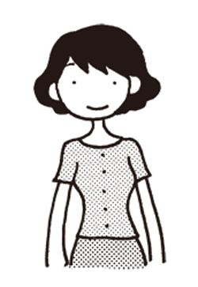
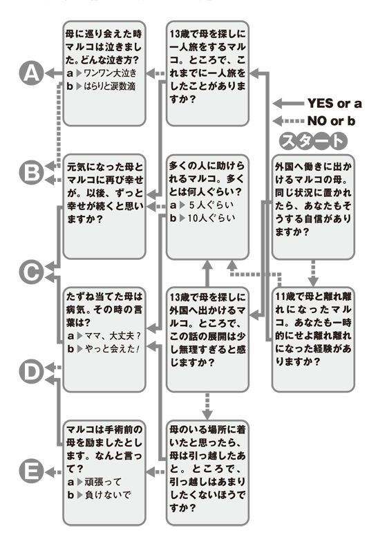

| あなたのベストな方法が分かります 幸せになる心理テスト | |
| ムッシュ ムラセ | |
| PHP研究所 (2005) | |

あなたのベストな方法が分かります
幸せになる心理テスト
ムッシュ ムラセ
「幸せになるために一番大切なことは？」
と聞かれたら、あなたは何をあげるでしょう？
お金や物質的な豊かさですか？ 愛や友情ですか？ それとも才能や運のよさに恵まれることでしょうか？ 苦労性の人なら、逆境に負けない強さも指摘するでしょう。
確かに、それらはすべて必要なこと。でも、それらを手に入れるための資質や能力を十分に備えている人はそう多くはいないはずです。だからこそ、「私は幸せだ」と胸を張って言える人が少ないわけだし、また、多くの人が「もっと幸せになりたい」と思っていろいろなことにチャレンジしたりするのでしょう。なかには、「幸せな自分」を思い描くだけで、具体的な行動をいっこうに起こさない人も少なくないようですが...... 。
本書は、あなたの幸せにぜひとも役に立ちたいという願いで編まれたもの。女性に人気の心理テストという手法によって、あなたのさまざまな面に光を当て、幸せに近づくための問題点をさぐり出し、アドバイスを加えました。未婚、既婚を問わず、女性が幸せになるための要素をすべて入れ込んだつもりです。
自分の個性や本当の心を知り、恋愛や人間関係に強くなる知恵を身につけ、逆境を乗り越える 術 を学び、さらに運を強くする方法まで分かる、と盛りだくさんの内容になっています。各テストは、それぞれ独立した作りですので、興味を抱いたテーマから始めてもいっこうに差し支えありません。
車で目的地につくにはカーナビがあったほうが便利です。幸せに到達するのにも、やはり手引きがあったほうがスムーズでしょう。本書があなたの「幸せへのナビゲーター」として役立てば、著者としてこれ以上の喜びはありません。
なお、本書で取り上げた心理テストは、すべてＰＨＰ研究所発行の雑誌『ＰＨＰスーパーワイド』『ＰＨＰスペシャル』『ＰＨＰカラット』に掲載されたもの。編集部のみなさまに、この場を借りて感謝の言葉を述べさせていただきます。また、本書発行にあたってご尽力をたまわった、ＰＨＰ研究所開発出版局の小川充氏、和田利子氏に厚く御礼申し上げます。
二〇〇五年五月
ムッシュ ムラセ
目次 ＣＯＮＴＥＮＴＳ
チェック１、２とも、15 の質問を読んで、あてはまるものすべてに○ をつけてください。
チェック１
□ 仕事以外では腕時計をほとんどしない
□ ５歳以上年下でも、素敵な男性だったら恋人にしてもいいと思う
□ 学生の頃、「制服には反対」的な言動をとったことがある
□ はやり物には興味なし
□ 気分で学校や会社を休むことがたまにある（あった）
□ 少女の頃はハッピーエンドより、悲しい物語に心ひかれた
□ 結婚してもベッドは別々にしたいと思う（実際にそうしてる）
□ よく衝動買いをするほうだ
□ しつけや教育に関して、親はうるさくなかった
□ 一人旅をしたことがある、もしくは時々したくなる
□ これだけはダメという食べ物が、５つ以上ある
□ 特技をあげろと言われたら、３つぐらいすぐにあがる
□ 古着感覚のファッションは、好みのおしゃれのひとつだ
□ 玉の輿に乗りたいという気持ちは、まったくと言っていいほどない
□ 理想の彼と巡り会えないなら、一生独身でもいいと思う（思ったことがある）
チェック２
□ 電話はあまり好きじゃない
□ 髪を染めたことは一度もないし、染めたいとも思わない
□ 友人や同僚と話す時は、聞き役に回ることが多い
□ 言われたことだけきちんとやっていればいいという仕事が好き
□ 人から「態度が大きい」と言われたことは一度もない
□ メイクはいつもほんのり程度
□ バカなことを言って人を笑わせることは、めったにない
□ 忘れた場合を除いて、ノーブラで出かけたことは一度もない
□ 10 円や20 円、お釣りを少なく渡されても黙っているほう
□ 漠然と田舎暮らしに憧れている
□ 体調が悪くても人にはグチったりしないほう
□ 人の話を聞く時は、自分でも気づかぬうちにうなずいている
□ 悩みがある時は、一人になりたいほう
□ 友達は、違うタイプより似たような性格のほうがうまくいくと思う
□ 人からものを頼まれたり、誘われたりするとイヤと言えないことが多い
診断の出し方
チェック１、２とも、○ のついた数を数えてください。その組み合わせは次のどれにあてはまるでしょう？
１は８コ以上、２は７コ以下→ 診断
１と２、いずれも８コ以上→ 診断
１と２、いずれも７コ以下→ 診断
１は７コ以下、２は８コ以上→ 診断
あなたは生き生きとしているし、おしゃれもハデ好みのほうでしょうから、 華やかな個性の持ち主 と言えます。そのうえ、そんな個性をよく分かっていて、男性の前では陽気にふるまったり、さりげなくアピールする 術 も十分心得ているはずです。そんなあなたは、どこにいても明るく輝く太陽のような存在感の持ち主です。人から注目される、異性から崇拝されるといった点では申し分のないタイプです。これからも、 のびのびと個性を発揮 していってほしいもの。
そんなあなたに問題があるとすれば、あまりにも目立ちすぎたりして、周囲のやっかみを生んでしまいそうな点。周囲から主役におされても、時には遠慮するなどの気配りを見せたほうが賢明かもしれません。
あなたは 自分をあまり出そうとしないタイプ のようです。職場でもどこでも、「私が私が...... 」としゃしゃり出ることはないし、目立つかっこうもしたがらないはず。
でも、もともと発想には独特なものがありますし、やることもユニークですから、いったん口を開いたり、人前に立たされたりすれば、「え、こんな人だったの」と強烈なインパクトを与え、人の心にしっかり根をおろすことができるはず。
そうです、あなたの存在感は、雲がなければ 皓 々 と輝く満月型。 もっと積極的に発言したり、リーダーシップを取ったり と、自分から雲を晴らすような行動をとるようにすれば、あなたの個性が 一 目 瞭 然 となるのは間違いありません。
あなたは 目立とう精神が旺盛なタイプ 。どこでも自己アピールしたがるし、周囲の視線を集めることに大きな喜びを感じるはず。おしゃれで言えば、メイクが濃かったり、光りモノ好きだったりするはずです。ただ、あなたの個性の表し方は、流行をそのまま取り入れるなど、けっこう常識的でオリジナリティーに欠けるところがあるようです。
そのため、あなたの存在感も最初は際立つものの、使っているうちにパワーが落ちてしまうケータイのバッテリーのように、時とともにインパクトを失ってしまいがちでしょう。時々イメチェンしたりしてパワーをチャージするとともに、 自分なりの言動・おしゃれを心がけ 、自らを大本から個性化する努力が必要でしょう。
テスト結果を見るかぎり、あなたはかなり 控えめで目立つことが嫌いなタイプ 。口数も少なく、会議ではできるだけ発言を控えているはず。パーティーへ出かけても、進んで壁の花のような態度をとりがちでは？ これでは、どこにいても、いるのかいないのかはっきりしない、 闇 夜 のような存在感にならざるをえないでしょう。
それが最も安心できるというのなら仕方がありませんが、少しでも注目されたい、自分を覚えていてほしいというのなら、やはり もっと自分をアピール しなくてはいけません。時にはハデな服を着てみたり、ユニークな髪型にトライしたり、ジョークを口にしたり、進んで周りの人に親切にしたりしてみては。それがつけ焼き刃ではなく、しっかりと自分の個性となっていくにつれ、次第に闇夜から脱出できることでしょう。
自走力がある！
ガッツがあって、自立心も旺盛なあなた 。人に頼ることなど、かえってわずらわしいと感じるはず。そうです、本当のあなたは、何でも一人で頑張って、実力をフルに発揮するタイプなのです。今後、「誰かやってくれないか？」などと上司が言ったら、 ぜひ「私が！」と名乗り出るのがおすすめ です。
実行力が抜群！
活発で勇気のあるあなた 。ジッとしているのが嫌いなはずだし、失敗を恐れる気持ちも低めでしょう。「これをやりたい」と思うとためらうことなく行動に出て、たとえ周囲に反対されても、ひるむことなく目標を達成しようとするはずです。そんな実行力こそあなたの最大の財産。 今後ともおおいに動き回って 。
継続力はたっぷり！
気が長く、辛抱強いあなた 。瞬発力には欠けるでしょうが、地道にコツコツ努力をさせたら、あなたの右に出る人はいないはず。「継続は力なり」を座右の銘にしている人も少なくないでしょう。ただ、もともと地味な能力だけに、周囲に分かってもらうのには、 どうしても時間がかかります 。その点はお含みおきを。
企画力が優れている！
あなたは 頭がよくまわり、発想が豊かなタイプ 。「こうすれば」というヒラメキが多いはずだし、それを形にするのもお得意でしょう。そうです、あなたは企画やプランづくりに才能を発揮する人なのです。ただ、企画は周囲に認められてなんぼという仕事。 アピールする相手の選択には考慮が必要 でしょう。
コミュニケーション力が豊か！
あなたは 社交的で話し上手な人 。誰とでも平常心で会話できるし、自分の気持ちを伝えるのも、相手の考えを理解するのもスムーズなはず。職場の人間関係でつまずくことはほとんどありませんし、むしろ広い人脈を築けるはず。気難しい上司にも敬意を払いつつ、 気軽に交流を求めていくとよいでしょう 。
健気で、ひたむきなあなた
真面目で思い込みの激しいあなた 。何にでも一生懸命になる人のようですね。脇目もふらず仕事に打ち込んだり、愛する人のためならたとえ火の中、水の中、どんな苦労もいとわないはず。
そんなあなたの 一 途 さは周囲の人の心を激しく揺さぶり、どこでも「可愛い人」と評判に...... 。「ホントに 健 気 なんだから」と感極まる男性も少なくないはず。
あなたがこの面を磨くには、 夢や目標を持つことがポイント 。「 叶 えたい！」「実現させたい！」というものがあれば、あなたは間違いなく全力投球、ひたむきさをしっかりアピールできるのです。
無邪気で、いじらしいあなた
あなたは かなりのお人好し。それに純粋 ときていますから、人の言葉は決して疑わないし、隠し事はめったにしないし、ウソなんかつけと言われてもつけないはず。また、好きな人のためには、何でもしてあげたいという気持ちも強いはず。そんな無邪気さ、いじらしさこそ、あなたが周囲の人に愛されてやまないゆえんです。
あなたがこの面を磨くには、ピュアなものに触れ続けるのが効果的。 動物を飼ったり、植物を育てたり 、芸術に親しんだり、遊園地などといった童心に返れる場所で遊んだり、そんな生活を送りましょう。
人なつっこく、愛嬌があるあなた
あなたは 親しみやすい甘えん坊タイプ 。誰にでも気軽に話しかけ、遠慮なく頼みごとができるはずです。そのうえ、根が明るくて愛想のいいあなたですから、どんな人とでもすぐに仲良くなれるし、たとえ迷惑をかけたとしても「図々しい子」などと、マイナス印象を持たれることはないはずです。そうです、あなたの可愛がられる部分は、そんな人なつっこくて 愛 嬌 のあるところ。
今後、この面を磨くには、とにかく 多くの人と交流するのが一番 です。サークルに入会したり、友達に友達を紹介してもらったりして、交友の輪をどんどん広げていきましょう。
素直で、従順なあなた
あなたは 気持ちがとても穏やかな人 。きついことは決して言わないし、乱暴な振舞いもほとんど見せないはず。モメ事が何より嫌いなので、人と意見が対立したり、やりたいことがぶつかったりすると、自分の意見を通そうとはせず、相手に従うことでしょう。また、男性とつきあうと、彼の言うことを素直に受け入れ、進んで彼色に染まろうとするはずです。そんな素直で従順なところが、あなたの可愛らしさの源になっています。
今後、この面を磨くには、リーダーシップのある先輩や男性など、 自分を引っ張ってくれる人との交流を深めるのが一番 です。
引き寄せる人か？ 遠ざける人か？
チェック１、２とも、15 の質問を読んで、自分にあてはまるものすべてに○ をつけてください。
チェック１
□ テレビのＣＭでいいなと思ったものを、すぐに購入したことが何度もある
□ 最近になってアメリカの大リーグに注目するようになった
□ 海外も含めて泊まり掛けの旅行に、年３回以上行っている
□ 気がつけば鼻歌を歌っていることがけっこうある
□ 仲間とカラオケを楽しむ時は、だいたい１番手や２番手で歌っている
□ スポーツは見るより、やるほうが好き
□ 小さい頃、町内のお祭りの輪によく加わっていた
□ 人より自分のほうがたくさん本を読んでいると感じることがある
□ お菓子などについているおまけ収集に凝ったことがある
□ ＮＨＫのドラマや歌番組はほとんど見ない
□ アイドルやスポーツ選手の追っ掛けみたいなことをやったことがある
□ 土日の休みで、一度も外に出ないなんて、病気でもないかぎり考えられない
□ 情報誌や情報番組はマメにチェックするほうだ
□ 年末は、例年、パーティーや忘年会の掛け持ちになってしまう
□ 小さい頃、「いたずらっ子」と呼ばれ、近所や親戚の間で評判だった
チェック２
□ 服の色は、寒色系より暖色系のほうが多い
□ 人のジョークに手を 叩 いてウケるなど、アクションはオーバーなほう
□ ラメやスパンコールなど、キラキラしたものを身につけるのが好き
□ 人の顔をタヌキ顔とキツネ顔に大別した場合、自分はタヌキ顔のほうだと思う
□ 上司や先輩に対して友達言葉を使ってしまうことが時々ある
□ 人からふられたジョークに気づかないことはほとんどない
□ 実際の年齢より、幼く、もしくは若く見られることが多い
□ 話す速度は速いほうだと思う
□ 友達や同僚と比べると、男性にからかわれることが多い気がする
□ 愛らしい子供やグッズを見かけると、つい「かっわい～」と声をあげてしまう
□ 中高生の頃、カバンにマスコット人形などをたくさんつけていた
□ 気づかぬうちに幼児言葉を使っていることが時々ある
□ 声が大きい、もしくはキンキン声だと言われたことがある
□ 人に撮られた写真を見ると、だいたいポーズをつけている
□ 友達や同僚と比べると、髪型やメークをよく変えるほうだと思う
診断の出し方
チェック１、２とも、○ のついた数を数えてください。その組み合わせで次のように診断が決まります。
１、２とも８コ以上→ 診断
１は８コ以上、２は７コ以下→ 診断
１は７コ以下、２は８コ以上→ 診断
１、２とも７コ以下→ 診断
好奇心が旺盛でフットワークも軽い のがこのタイプ。おもしろそうだと思ったことにはパッと飛びつき、興味をひかれた相手には積極的に話しかけていくでしょう。そのうえ、表情がイキイキとしていたり、明るい雰囲気も漂わせているはずですから、自然と周りに人が集まり、どんな人とも会話が弾むことでしょう。
そんなあなたは、いつでもどこでも楽しいことが起こる人。これからも いろんなことに興味を持って 、のびのび振舞っているかぎり、楽しいことはひっきりなしに起こるはず。ただ、楽しさに心を奪われ、地道な努力を忘れてしまわないかが心配なところ。
行動力があって何事にも積極的 なのがこのタイプ。楽しむ機会も逃さずつかもうとするはずだし、自分から飲み会やグループ旅行を提案することも多いはず。それ自体はおおいにけっこう。でも、あなたは自分のペースが強すぎるせいか、周りの人はあなたを楽しませてあげたいという気にはなりにくいようです。その証拠に、いろいろと誘うわりには、相手がノッてくること、誘ってくることはそれほど多くないはずです。
従ってこれからは、まず 周りの好みに合った遊びなどを提案する ことが大切。そして、ユーモアセンスを磨いたり、レジャー情報に詳しくなったりして、周りの人に「この人と一緒だと楽しいだろうな」と思わせる工夫も必要となってきます。
控えめでいつものんびり構えている のがこのタイプ。楽しむことにもガツガツしないし、自分からレジャーやパーティーを提案したりすることも少ないはず。そののんびりムードが周りの人の心を 和 ませるので、「一緒に旅行へ行かない？」とか「パーティー開くからあなたもおいでよ」といったお誘いに結びつきやすいと言えるのです。
従ってあなたの課題は、周りの誘いを待つだけでなく、 自分からもお楽しみの場を設ける など、楽しむことによりアクティブになることです。とりあえず、人からパーティーに招かれたら、次はあなたがお招きするなど、すぐにお返ししましょう。これが身につけば、頻繁に楽しいことが起こるあなたになれるはず。
思慮深く、何事にも慎重 なのがこのタイプ。いつも難しそうな顔をしていたり、腰も重そうに見えるので、グループレジャーの計画が持ち上がっても、「あの人はノッてこないだろう」とパスされることが多いでしょう。仮にお誘いがあったとしても、「他にやるべきことがあるはずだ」などと考えて断ってしまうことも少なくないはず。
これでは楽しいことが素通りしてしまうのもやむをえませんね。それがイヤなら、もっと 行動範囲を広げ 、新しいことにもチャレンジすること。そして、 周りとの交流にも積極的に なりましょう。そうすることで、レジャーのお声掛かりが増えたりして、徐々に楽しいことが起こるあなたに変わっていけるはずですよ。
ちょっと待って！ あなたのひと言
次の７つの質問を読んで、答えを直感的に選んでいってください。
Ｑ１
このバラの茎の部分に何かを描き足すとしたら、どちらにしますか？
ａ ▼ トゲ
ｂ ▼ 葉
Ｑ２
真っ赤な顔をしている人を想像してください。さて、顔が赤い理由は？
ａ ▼ 怒っているから
ｂ ▼ 恥ずかしいから
Ｑ３
この液体は、どちらに近いと思いますか？
ａ ▼ オイルのようにドロリとしている
ｂ ▼ 水のようにサラリとしている
Ｑ４
あなたは暗闇の中を歩いています。かすかに光が見えてきました。それは、どちらの方から？
ａ ▼ 横の方から
ｂ ▼ 前方から
Ｑ５
この女性の背後に何かを描き込むとしたら、どちらにしますか？

ａ ▼ 道路などの風景
ｂ ▼ もうひとりの人

Ｑ６
幼いあなたは友達とお 絵 描 き遊びをしています。今、ある色のクレヨンを持っているのですが、それは何色でしょう？
ａ ▼ 紫色
ｂ ▼ 緑色
Ｑ７
この図形が、車のタイヤのように転がるとしたら、どんな音を立てると思いますか？
ａ ▼ ガタガタ
ｂ ▼ カタンコトン
診断の出し方
ａを選んだのはいくつでしたか？ その数で、次のように診断が決まります。
ａが６コ以上→ 診断
ａが４～５コ→ 診断
ａが２～３コ→ 診断
ａが１コ以下→ 診断
診断 あなたが人を傷つけている可能性は？
あなたは ストレスを抱え込みやすいタイプ と言えます。しかも、 気性が激しい ために、そのたまったストレスを攻撃的な言動によって発散することが多いでしょう。その証拠に、人を責めたり、ちくちくイヤミを言ったあとは、妙にスッキリとした気分になるはずです。そんなあなたは、きついひと言、激しい言葉で人を傷つけがちと言えます。
そんなあなたに心がけてほしいのは、ストレス解消の 矛 先 を人に向けるのではなく、ボールやサンドバッグなど物に向けること。つまり、 スポーツ、トレーニング、ゲームといったことで発散 するのです。これが習慣になるにつれ、意地悪なことを言ったりして人を傷つけることは確実に減っていくでしょう。
あなたは とても率直でストレートな性格 。相手が間違っていると思ったら口にするし、おかしいなという点を見つけると遠慮なく指摘したりするはずです。それが必ずしも悪いというわけではありませんが、言われた当人にとっては心にグサッとくることが多いはず。そんなわけで、周りの人から「悪気はないのは分かるんだけど、どうも正直すぎて...... 」と煙たがられているでしょう。
これからは、相手の気持ちを思いやって ソフトな表現 を心がけましょう。すると、同じことを言っても相手の受け止め方はグッと素直なものになり、自分の意思も通りやすくなることに気づくはず。そうなればしめたもの。以後、相手を傷つけるといったことはほとんどなくなるはずです。
なかなか 賢くて要領のいいあなた。人の気持ちにも敏感 なほうですから、〝 こういうことを言えばこうなる〟 という予測がすぐに立つので、人を傷つける言動もうまく避けることができるはず。従って、基本的には「大丈夫」と言えますが、ただちょっとだけ心配な点があります。
それは、持ち前の賢さをアピールしたいという気持ちが強くなりすぎた場合です。そんな時のあなたは、つい人をバカにするような口ぶりになってしまいやすいのです。そんなに強い意味で言ったのではないにしても、言われた当人はプライドが傷ついてしまいます。これからは「何も分かっていないんだから」とか、 「バカねえ」といった口グセは厳しく慎む ようにしてください。
あなたは 気が優しくデリケートな神経の持ち主 。人の心の痛みがよく分かるタイプと言えます。また、自分が傷つくのがイヤなので、人を傷つけまいと心がける傾向も強いようです。そのため、どんな時でも周囲に細かく気をつかい、人を責めたり、けなしたりするような発言は極力避けることでしょう。むしろ、相手の欠点やミスを好意的に解釈して、ホメたり励ましたり慰めてあげることが多いはずです。というわけで、あなたの場合はまったく大丈夫。何げないひと言で人を傷つける心配はほとんどないと言えるでしょう。
ただ、 人は十人十色 です。相手によってはきついセリフだったりすることがないとは言えません。その点はちょっと頭に入れておくとよいでしょう。
ちょっと威張っている
あなたは 有能な頑張り屋 。それだけに、自分には相当自信を持っていて、いつも堂々と振舞っているはずだし、自分の考えも明確に打ち出すことでしょう。それはそれでけっこうですが、ただ、ちょっと自信を持ちすぎてしまうと、周囲に対して高圧的になってしまい、「威張っている」と思われることも多いはず。
そんなあなたに心がけてほしいのは、言うまでもなく 謙虚さ でしょう。自分はまだまだ未熟なんだという気持ちでいれば、人を見下すような態度はとらないし、自然と腰も低くなり、確実に印象がよくなるはず。
けっこう図々しいよね
あなたは 行動力あふれる元気者 。決断は早いし、やることもスピーディー。チャンスと見たらパッと動けるし、周りの人がもたもたしていれば、「私に貸しなさいよ」と自分でとっととやってしまったり...... 。
あなたは気づいていないと思いますが、そんなところが「強引だ」とか「図々しい」とか思われる原因になっています。従って、あなたの場合は、もっと ゆったり 構えること。そして 相手の意思を尊重 すること。これが何より大切です。もちろん、人の仕事や恋人をとるようなマネをしないのは言うまでもありません。
意外に油断がならない
あなたは 頭の回転が速い し、 損得にもかなり敏感 な人のよう。どうすれば得するかということがよく分かっていますし、損をしそうと感じたらサッと逃げ出す抜け目のなさもお持ちのよう。面倒な役目を押しつけられたり、貧乏クジを引くことはまずないはずです。
あなたとしてはそんなところがご自慢なのでしょうが、周りの人は「油断がならない人」と警戒せざるをえません。あなたが印象アップを図るためには、この点を直すのがポイントです。時には進んで 損を引き受けたり、抜けたところを見せたり するとよいでしょう。
冷たいところがある
あなたは 冷静で取り乱すことの少ない人 。人前でキャーキャー騒ぐことなどめったにないはず。何があっても自分のペースを崩さず、誰に対しても一定の距離を置くでしょう。おかげで、面倒なトラブルに巻き込まれることは少ないはず。それ自体は確かにけっこう。
ただ、マイペースが強くて、他人にわずらわされるのを嫌うため、どうしても「冷たい人」と見られてしまいがちです。人は一人で生きているわけではないのですから、もっと 周りの人に関心 を持ち、時には一肌脱ぐぐらいのところを見せてください。
何だかつまらない人
あなたはかなり デリケートで傷つきやすいタイプ でしょう。相手に反発されたり悪く思われたくないために、本心をなかなか出しませんし、納得していなくても相手の意見に黙って従うことも多いはず。きっと口数は少ないし、自分からレジャーを提案するようなこともめったにないはず。これでは周りの人に「つまらない人」と思われて当然でしょう。
とにかくあなたは、傷つくのを怖がってばかりいないで、もっと自分を出さないと...... 。 自分から積極的に話しかけ、遊びにも誘い 、ジョークのひとつも口にしてみましょう。
次の質問を読み、自分にあてはまるものすべてをチェックしましょう。
□ 人と遊ぶ時は、自分のほうから誘いをかけることが多い。
□ 友達には、遊び上手な人もいればお堅い人もいるといったように、交友関係はかなりバラエティーに富んでいる。
□ 周囲の人と本やＣＤなど物の貸し借りをよくするほう。
□ ケンカになった時は、いい悪いに関係なく、自分から和解するようにしている。
□ 恋人がいても、女友達とのつきあいが疎遠になるということはない（なかった）。
□ 第一印象はあまりアテにならないものだと思う。
□ 10 年以上のつきあいになる親友がいる。
□ 人のウワサ話をすることは、決して悪いことではないと思う。
□ 場の盛り上げ役になることがわりとある。
□ 小さい頃から人見知りはしないほうだった。
□ 恋人や友人からの手紙やメールを読んで、いつまでも放っておくということはほとんどない。
□ インターネット（携帯電話のものも含む）を利用して、交友の輪を広げたことがある。
□ 友人にはニックネームで呼ばれることが多い。
□ 自分から呼び掛けて、パーティーやグループレジャーの機会を持つことがけっこうある。
□ 親友、恋人、家族にはあまり秘密を持たないほうである。
答え終わったら、チェックした数を数えてください。
８コ以上→◎
７コ以下→☆
とします。
イラストを見ながら質問を読み、ａ、ｂどちらかの答えを選んでいってください。あまり深く考えず直感的に選んでいきましょう。
Ｑ１
？の部分には、どちらの図形を乗せたほうがいいと思いますか？
ａ ▼
ｂ ▼
Ｑ２
この女性の表情を想像してください
ａ ▼ 驚いた顔
ｂ ▼ おかしくて吹き出した顔
Ｑ３
この図形を使ってイラストを描くなら、ａ・ｂどちらのイラストに賛成ですか？
ａ ▼ 動物
ｂ ▼ キノコ
Ｑ４
真ん中の女性の親友が、ａ・ｂどちらか一方の人だとしたら？ ピンと来たほうを選んでください。
Ｑ５
葉の上に何か描き込むなら、どちらにしますか？
ａ ▼ カタツムリ
ｂ ▼ 水滴
Ｑ６
この女性が話している相手は、男性、女性、どちらだと思いますか？
ａ ▼ 男性
ｂ ▼ 女性
Ｑ７
あなたが簡単に花を描くとしたら、どちらになりそうですか？
ａ ▼
ｂ ▼
答えを全部選んだら、ａを選んだ数を数えてください。
ａが４コ以上→◎
ａが３コ以下→☆
とします。
診断の出し方
テスト１、２のマークの組み合わせを調べてください。次のどれにあてはまるでしょう？
テスト１が◎ でテスト２が◎ → 診断
テスト１が◎ でテスト２が☆ → 診断
テスト１が☆ でテスト２が◎ → 診断
テスト１が☆ でテスト２が☆ → 診断
あなたは 社交性が豊かで、かなり交際好き 。これまで多くの人とつきあって、さまざまなことを学んできたようです。また、 感受性が鋭く想像力も豊か なようですから、人の微妙な心の動きに敏感に気づくし、相手が何を思っているかも容易に察することができるはず。ピンときたことを口にしたら、「何で分かるの」なんて驚かれることもしばしばでしょう。
これからも人の心の理解度をさらに高め、より豊かな人間関係を築いていってほしいもの。それには、持ち前の社交性を生かし、自分とはまったく異質なタイプとつきあったりして、 交際の幅をどんどん広げる のが効果的でしょう。
あなたは 人づきあいに積極的 。誰とでも気軽につきあい、パーティーなどの誘いはほとんどＯＫしてきたでしょう。そんな社交体験の豊富さが、人の心を理解するのに役立っています。ただ、 その一方で、想像力がイマイチ で物事を単純に判断する傾向がありますので、相手の心の理解が表面的だったり、ワンパターンに陥ったりということがよくあるはず。
人の心というものは、もう少し複雑なもの。これからは、表情や振舞いの裏に隠されたものを見抜くクセをつける必要があります。それにはなんといっても 想像力を磨く ことが大切です。人の複雑な心理をテーマにした小説や映画などにたくさん触れるとよいでしょう。
カンが鋭く、洞察力に恵まれています 。人の顔色やしぐさからわりと簡単に相手の心を感じとることができるでしょう。ただ、あなたは 人づきあいにあまり熱心でなく 、交際経験がそれほど豊かでないために、判断が一人よがりになりすぎたりして、的を外すことがけっこうあります。
つまり、ズバッと 正 鵠 を射ることがある一方で、間違った理解の仕方をしてしまうこともありえるのです。そんな失敗を犯さないためには、やはりもっと多くの人と交わって、 人の心のあり方の知識を増やす 必要があるのです。その引き出しが増えれば増えるほど、あなたの理解度は適切なものになっていくでしょう。
つきあいにあまり熱心でなく、人の気持ちにも鈍感 なあなたは、人の心の理解度は相当低めと言わざるをえません。家族が悩みを抱えていてもほとんど気にしないはずだし、先輩に叱られた時も、その裏に隠された励ましのニュアンスにも気づかないことでしょう。
これでは多くの人から「ニブい人」と 疎 まれたり、「何にも分かってくれない」と非難されたりして、人間関係も恋愛もなかなかうまくいかないはず。
そんなあなたは、人間関係の基本から改善していく必要があるでしょう。まずは、 もっと人に関心を持つ ことです。 また、人をよく観察する ことも大切です。
中学生に戻ったつもりで、次の15 の質問を読み、自分だったらこうする、こう思うという答えを１つずつ選んでいってください。
Ｑ１
春休みも終わる頃、あなたは友達と５人でハイキングに出かけることに...... 。待ち合わせ場所の駅前にあなたが着いた時は？
ａ ▼ まだ１人しか来ていなかった
ｂ ▼ もうみんな来ていた
Ｑ２
電車に乗って、４人がけのボックスに座る場合、あなたは？
ａ ▼ サッとボックス席のどこかに座る
ｂ ▼ １人余るので、自分は別の席に座る
Ｑ３
目指す山のふもとの駅に着きました。ここでバスに乗り換えるのですが、バスはすぐに出発します。そんな時あなたは？
ａ ▼ 先頭に立ってバス乗り場に走る
ｂ ▼ 「間に合うわよ」と早足程度でバス乗り場に向かう
Ｑ４
バスに30 分ほど揺られ、登山口駅に到着。そこで、みんなにひと声かけるとしたら？
ａ ▼ 「さあ、登ろう！」
ｂ ▼ 「トイレに寄ってかない？」
Ｑ５
歩きだして30 分もたたないうちに、ある人が「疲れたよ～」と言いだしました。どうしますか？
ａ ▼ 無視してスタスタ歩いて行く
ｂ ▼ ひと休みしてあげる
Ｑ６
五合目にきたところで頂上がチラッと見えました。その形はどちらだと想像しますか？
ａ ▼
ｂ ▼
Ｑ７
山は休憩をとりながら登らないといけません。あなたがリーダーだとしたら、何分休憩と言うでしょう？
ａ ▼ ５分
ｂ ▼ 15 分
Ｑ８
ひと休みしてまた登りだしました。と、向こうの山の山腹に山桜が美しく咲いているのを発見。それを背景に写真を撮るなら？
ａ ▼ １人だけで
ｂ ▼ みんなと一緒に
Ｑ９
あとちょっとで山頂というところから急な上り坂に。どっちの登り方をしますか？
ａ ▼ そのまま一気に登ってしまう
ｂ ▼ ひと休みしてから登りだす
Ｑ10
やっと頂上に。その瞬間の表情は、どちらに近いと思いますか？
ａ ▼ 「わあ、きれい、やった～！」という感じの輝く顔
ｂ ▼ 「疲れた～、もうダメ」という感じのヘトヘト顔
Ｑ11
さっそく草地にシートを広げてお弁当。あなたのはどちらでしょう？
ａ ▼ コンビニで買ったもの
ｂ ▼ お手製の、もしくは家族が作ってくれたもの
Ｑ12
40 分ほどしてから山を下りました。すごく急な坂ですが、あなたの下り方は？
ａ ▼ つい小走りになってしまう
ｂ ▼ 転ばないように足元を見ながら一歩一歩
Ｑ13
山道を抜けると、車の通る道路を歩くことに。そんな時の思いは？
ａ ▼ 自然の中を車で走ったって意味ないじゃない
ｂ ▼ 車に乗ってる人は楽でいいなあ
Ｑ14
バスに乗ってふもとの駅に着きました。お土産や山でとれる山菜などを売っているお店があります。友達は買ったけど、あなたは？
ａ ▼ 買う
ｂ ▼ 買わない
Ｑ15
帰りの電車の中、みんな疲れて眠っています。あなたも座りながら眠りこけています。その様子は、次のどちらでしょう？
ａ ▼ リュックを足元に置き、頭を隣の友達の肩にもたれさせながら大口を開けて......
ｂ ▼ リュックを両腕で抱え、頭をそのリュックにのせるように、ガクッとたれて......
診断の出し方
ａを選んだのはいくつでしたか？ その数で、次のように診断が決まります。
ａが13 コ以上→ 診断
ａが10 ～12 コ→ 診断
ａが７～９コ→ 診断
ａが４～６コ→ 診断
ａが３コ以下→ 診断
「ごめんなさい」が言えない
勝ち気で負けず嫌い のあなた。何にでも積極的に向かっていくし、どんなに大変でも決して弱音をはかないはず。その反面、とても 意地っ張り なので、失敗したり人に迷惑をかけた時、「私が間違ってました」「ごめんなさい」と自分の非を認めるセリフをなかなか口にできません。
言うまでもなく、世の中に完璧な人なんて一人もいません。必ず失敗をするものです。その 失敗を率直に認めて 、改善しようと努力することで人は成長できるのです。
自立心が旺盛 で、何でも一人で頑張って片づけようとするあなた。それに プライドも高い ので、人に助けてもらうことを恥と考える傾向が強いようです。そのため、困ったことがおきても、「お願い、助けて」「頼みます」がなかなか言えません。
人間、一人で生きているわけではありません。やはり 困ったときは助け合うべき だし、そうすることでよい人間関係が生まれるのです。
気持ちが 穏やかで平和主義者 のあなた。人とモメることが嫌いで、つねにいい関係を保とうとするはずです。それ自体はおおいにけっこう。でも、相手が間違ったことをしたり、身勝手なことを言ってきた時も、「それはおかしい」「間違っています」とはっきり言えず、イエス・ウーマンになってしまいがちな点はやはり問題でしょう。
確かに険悪な空気が流れるのはイヤなものですが、相手に迎合してばかりでは、本当の意味でのいい関係は築けません。やはり言うべきことは はっきり口にすべき です。
気が優しく、思いやり あふれるあなた。相手に悪く思われたくないという気持ちも強いので、人から誘いを受けたり何か頼まれたりした時、イヤだなと思ってもなかなか「ＮＯ」と言えないはず。しぶしぶ引き受けたり、イヤイヤおつきあいしていても、自分自身つらいし、相手だってあなたの本心を察知して不愉快な思いをするでしょう。
ある程度の妥協は必要ですが、つねに「ＹＥＳ」ではいけません。 これだけは譲れない、という線を引き ましょう。
控えめで慎み深い あなた。それに、 デリケートで傷つきやすい ようですから、この人に話しかけよう、あの人を遊びに誘おうと思っても、つい「迷惑かも」「断られたらいやだな」と思って、口にできないのでは？
でも、人間関係はどちらかが働きかけなければ何も起きません。相手からのアクションを待ってばかりではダメ。暇そうにしている時など、 相手の気持ちや状況をふまえて声をかける ようにすれば、そうは断られないはずですよ。
あらすじに目を通してから５つの質問を読み、答えを１つずつ選んでいってください。
物語のあらすじ
貧しい木こり夫婦には子供が２人。 飢 饉 に襲われると継母は夫に口減らしを迫り、２人を森に放置する。いったんは兄・ヘンゼルの機転で家に帰るが、２度目の放置では森をさまようことに。そこに現われたのがパンと菓子の家に住む老いた魔女。 狙 いは２人を食べること。その日は親切にして油断させ、翌日 豹 変 。ヘンゼルを小屋に閉じ込め、グレーテルを酷使して食べる時機をうかがう。しかし、グレーテルの機転で魔女は焼け死ぬ。魔女の宝石を持って無事父の家に帰還。継母はすでに亡く、以後、３人で楽しく暮らす。
Ｑ１
飢饉によってどのくらいの人命が失われたと想像しますか？
ａ ▼ 数万人規模
ｂ ▼ 数十万人規模
Ｑ２
森に放置された２人は、月光に照らされた小石をたどって家に帰りつきます。ところで、その月の状態は？
ａ ▼ 満月
ｂ ▼ 半月
Ｑ３
２人は、森の中を真っ白な美しい小鳥に導かれてお菓子の家に辿り着きます。でも、それは魔女の家。ということは、この小鳥は？
ａ ▼ 最終的に助かるのだから、やはり幸せの鳥
ｂ ▼ 魔女の手先ということになるのでは？
Ｑ４
お菓子の家は、魔女にとって獲物を引き寄せるためのおとりです。ところで、あなたならどちらを先に食べますか？
ａ ▼ キャンディーでできた窓
ｂ ▼ パンでできた壁
Ｑ５
グレーテルは、魔女がかまどに頭をつっこんでみせたその瞬間、ひと押しして魔女をかまどに閉じ込めます。そのひと押しとは？
ａ ▼ 両手でグイッと押し込んだ
ｂ ▼ 足で 蹴 って押し込んだ
診断の出し方
ａを選んだのはいくつでしたか？ その数で、次のように診断が決まります。
あなたの隠された欲望はこれ！
ａが５コのあなた 贅沢願望
あなたの心の奥に隠されているのは、 贅 の限りを尽くした 王侯のような生活 でしょう。幼い頃、そんな物語を読んだりアニメを見たりして、「いつか私も...... 」と強く願ったのでは？
ａが４コのあなた スター願望
あなたが心の奥にしまいこんでいるのは、ズバリ、 スター願望 です。きらびやかなドレスで華やかな舞台に立ち、拍手喝采を浴びているような夢を、時々見るのではありませんか？
ａが３コのあなた モテたい願望
あなたが心の奥に秘めているのは、 あらゆる男性にモテたい という到底叶わぬ願望です。パーティーや合コンを前に、全員にチヤホヤされている自分をつい想像しがちでは？
ａが２コのあなた 理想の恋愛願望
あなたの心の奥に秘められてるのは、永遠の絆で結ばれた 理想の恋愛願望 です。身近な男性やありふれた恋にまったく興味を引かれないとしたら、この願望が邪魔しているのです。
ａが１コかゼロのあなた 放浪願望
あなたの心の底に秘められているのは何ものにもとらわれず、 世界を放浪して回りたい というボヘミアン欲求。そのせいで、日常生活に過度の 閉 塞 感を感じてしまうのでしょう。
『アルプスの少女ハイジ』で分かる、あなたの心の中に潜む天使と悪魔
あらすじに目を通したうえで、３つの質問に答えてください。
物語のあらすじ
みなしごハイジは、アルプス 山 麓 に住むおじいさんに預けられる。美しい自然や、親切なペーターなどに囲まれて幸せな日々を送る。しかし、足の悪いお嬢様・クララの友達として都会へ連れていかれる。クララとは仲良しになったものの、自然から切り離されたハイジは元気をなくし、やがて心身症に。アルプスへ戻されたハイジはたちまち回復。夏にはクララがおばあさんとともに来訪。クララもアルプスによって 癒 され、ハイジたちの手助けで歩けるようになる。夏が終わり、クララは都会に戻るが、「毎年アルプスへ」という手紙がハイジのもとへ届く。
Ｑ１
デーテおばさんに連れられ、山を登っておじいさんの家に向かう途中、あまりにも暑かったのでハイジは身につけている物を脱ぎました。さて、どこまで脱いだでしょう？
ａ ▼ 帽子やコートはもちろん、上着とスカートも脱いでペチコート姿になった
ｂ ▼ 帽子とコートを脱ぎ、上着のボタンを半分ほど外した
Ｑ２
クララの家でストレスがたまり、心身症になってしまったハイジ。一番つらかったことが、次のどちらかだとしたら？
ａ ▼ 母とも言うべきアルプスの山々から引き離されたこと
ｂ ▼ 召使い頭の女性に、何度もつらくあたられたこと
Ｑ３
アルプスに戻ったハイジをクララが訪ねてきた時、ペーターはクララにハイジを取られたような気になって、クララの車椅子を谷底に突き落としてしまいます。そのことにハイジが気づいたとしたら、いったいペーターになんて言うでしょう？
ａ ▼ なんてひどいことをするの！
ｂ ▼ どうしてそんなことをするの？ わけを教えて！
診断の出し方
ａを選んだのはいくつでしたか？ その数で、次のように診断が決まります。
あなたの心に住む天使と悪魔はこれだ！
ａが３コのあなた 愛情深いけど、憎悪も深い
純粋でこの上なく愛情深いのがこのタイプ。愛が満たされていれば、 天使のように優しい人 ですが、いったん裏切られると 夜 叉 の心 が顔を出し、とことん憎み続けるおそれがあります。卑劣な人は相手にしないのが賢明でしょう。
ａが２コのあなた 優しいけど、堕落願望が......
心が温かく穏やかな性格のあなた。そんなあなたの心には 平和を求める気持ち がしっかり根づいていると同時に、自らはもちろん、周囲の人も 堕 落 へと誘う 享楽的な心 が潜んでいるよう。歓楽の世界には足を踏み入れすぎないこと。
ａが１コのあなた 誠実だけど、おせっかい
誠実で気のいいあなた。自分の利益を度外視して、人を救おうとする 献身的なあなた と、おせっかいがすぎて何かと面倒を引き起こす 小悪魔のあなた が潜んでいるよう。相手の気持ちを十分に汲み取ったうえで人助けをするべきです。
ａがゼロのあなた 知的だけど、人の弱点を突く
知的でつねに冷静さを失わないのがこのタイプ。そんなあなたの心には、真実を求めてやまない 求道者のあなた と、人の弱点を暴きたてる酷薄とも言えるほどの 冷たいあなた が共存しているよう。許す心を持ちたいものですね。
『トム・ソーヤの冒険』で分かる、あなたはどんな誘惑に弱いのか？
あらすじに目を通したうえで左の７つの質問を読み、〝 イエス〟 と思ったものに○ をつけていってください。
物語のあらすじ
養母の目を盗んで悪さばかりをしているトム。親友のハックと墓場に行った時に殺人事件を目撃。そして、 濡 れ 衣 を着せられた人を助けて村の英雄に。また、家出をして村の人々に死んだと思われるが、葬式の日に突然現われて驚かす。さらに、探険に出かけた 洞 窟 で好きな女の子・ベッキーと道に迷ってしまうが見事に脱出。後日、その洞窟で、泥棒が隠した宝物をハックと見つけだし大金持ちに。いったんは家に戻っていい子にさせられそうになる２人だが、その窮屈さに嫌気がさして再び逃げ出し、山賊の仲間を作ろうとする。２人の冒険はまだまだ続く...... 。
Ｑ１
□ 養母に育てられるトム。ところで、「養母」から受けるイメージは〝 優しい〟 より〝 うるさい〟 のほうですか？
Ｑ２
□ 幼い頃、あなたの身近にハックのような悪ガキがいたら、話もしないと思いますか？
Ｑ３
□ トムはハックから墓場に行こうと誘われます。小学校５、６年生のあなたが、友達から怖い場所を見に行こうと誘われたら断りますか？
Ｑ４
□ ベッキーはトムと仲良くなりますが、あなたはトムのような自由奔放で冒険心のある男の子は苦手なほうでしたか？
Ｑ５
□ ベッキーたちは洞窟探険に出かけます。仮に５、６年生のあなたが親に洞窟探険をすると言ったら絶対に許してもらえないと思いますか？
Ｑ６
□ トムとハックは宝探しに出かけます。あなたは小さい頃、宝探しのような遊びはほとんどしませんでしたか？
Ｑ７
□ トムとハックはいい子にさせられそうになりましたが、あなたも幼い頃、「いい子にしていなさい」と親によく言われましたか？
診断の出し方
いくつ○ がついたかで、あなたの診断が次のように決まります。
あなたはこんな誘惑に負けやすい！
○ が６コか７コ おいしい食べ物の誘惑
親があなたの健康に神経質だったせいか、あなたは非常に窮屈な食生活を送ってきたものと思われます。そこから生じた不満が 食べ物の誘惑に弱い 傾向を育てたのでしょう。しっかりコントロールをしながら好きな物を食べるようにすることで徐々に克服できるはず。
○ が４コか５コ 楽しい遊びの誘惑
親がきまじめだったり禁欲主義者だったりしたせいか、幼い頃からあまり楽しい時間が持てなかったはず。それを埋め合わせようと、今は 遊びに夢中になりがち で、誘いにも弱いのでしょう。しばらくの間、イヤというほど遊び回るとそのうち飽きてくるはず。
○ が２コか３コ 高価なブランド物の誘惑
あなたは質素な家庭に育ったのか、幼い頃から虚栄心をあまり満たせなかったはず。その反動で、自由にお金が使えるようになった今、みんなが持っていないような ブランド品を見ると我慢できなくなる のでしょう。どうせなら本当にいい物だけ買うようにしたいもの。
○ がゼロか１コ ステキな男性の誘惑
親が仕事などに気をとられすぎていたせいか、あなたは父親の愛情不足をつねに感じながら育ってきたものと思われます。その 飢餓感を補ってくれるのはなんといっても男性 です。どのみち誘惑に負けるなら、つまらない男性ではなく、誠実で立派な人にしたいもの。
『母をたずねて三千里』で分かる、あなたが無意識に我慢してること
あらすじに目を通したうえで、スタートから始め、矢印の指示通りに進んでいってください。
物語のあらすじ
ジェノバからアルゼンチンへ、母が出稼ぎに出たのはマルコが11 歳の時。１年もすると手紙が届かなくなり、相談の結果、マルコが母を探しに出かけることに。１カ月かかって母の働き先に到着、母の雇い主を訪ねると引っ越したあと。悲しみでいっぱいのマルコだが、多くの人に助けられ、やっとのことで移転先へ。しかし、そこでもまた引っ越したあと。果てしない旅が続く。荷馬車に揺られ、歩き続けて移転先に到着すると、母は病いの床。しかし、マルコの顔を見ることで手術を受ける勇気が...... 。こうして元気を回復した母とマルコは、帰国の 途 につく。

あなたが我慢しがちなのはこれ！
言いたいことを言いたい！
傷つきやすいあなたは、人に攻撃されるのを極度に恐れる傾向が...... 。そんな自分を守るため、 言いたいことや、やりたいことを我慢する クセがついたよう。健全な人間関係を築くうえでだいぶマイナスになっていますよ。
じゃんじゃん買い物がしたい！
知的なあなたは、物欲をモロに出して買い物に走る人を冷ややかな目で見ているはず。それだけに、 あれもこれも欲しいという欲求をグッと抑え込んでしまいがち 。ここが正常な金銭感覚に狂いをもたらす原因でしょう。
ハメを外して遊びたい！
優等生タイプのあなたは、周囲からしっかりしているといった評価を受けているはず。そのイメージを崩すのが怖くて、ハメを外して 遊びたいという欲求を抑え込んでしまいがち 。それがストレスの大本に...... 。適度に発散を。
もっと甘えたい！
勝ち気なあなたは、日頃から男性に甘える女性などを厳しく批判しているはず。当然ながら、自分の中の 甘えたい願望もしっかり抑え込んでいる でしょう。彼氏ができないとしたら、その辺のところが主な原因かもしれませんよ。
たまにはのんびりしたい！
負けず嫌いのあなたは、どんな時でも「負けてなるものか」と必死に頑張ることでしょう。それだけに 「休みたい、のんびりしたい」という欲求を無理やり抑え込んでしまいがち 。無理がたたってのダウンには十分注意が必要です。
あらすじに目を通したうえで、スタートの質問から始め、答えの指示通りに進んでください。
物語のあらすじ
ある王国に美しい姫が生まれるが、魔女によって「糸車の針で指を刺して死ぬ」と 呪 いをかけられる。15 年たったある日、別荘のお城の塔の部屋で糸車の針に手を刺すが、死なずに眠り続けることに。１００年後、代替わりした王国の王子が姫のもとに現われると姫は眠りから覚め、２人は直ちに結婚。しかし、王子の母である王妃との関係を考え、王子は姫を隠し続ける。その間、子供が２人生まれ、王子の父は死ぬ。ところが、王子が戦争に出かけている間に、王妃は姫と子供たちを殺そうとする。そこへ王子が帰還。王妃は自ら死を選ぶ。
あなたはこれから逃げている！
争いごとから逃げている
臆病な反面、強い自尊心を秘めているのがこのタイプ。争いごとなど 屈辱感を味わうことは極力避けてしまう はず。でも、逃げている限り争いごとには強くなれません。向かっていって一度勝利を収めれば変われるはずです。
困難なことから逃げている
敏感でプレッシャーを受けやすいタイプのあなたは、重い責任を負わされたりすると、必要以上に 重圧を感じて気づかぬうちに及び腰に なってしまうはず。あまりおおげさに受け取らず、〝 なんとかなるさ〟 でいきたいもの。
人前に立つことから逃げている
自意識が強く、人にちやほやされたいあなたは、目立ちたいとは思うものの、実際には恥をかくのが怖くて 人前に立つことから逃げてしまう はず。あなたが思っているほど、人は他人に注目していないものですよ。
人づきあいから逃げている
誰からも優しくされたいあなた。それだけに人に拒絶されたりする不安は人一倍なので、自然と 浅いつきあいの人との交際は避けてしまう のです。〝 誰からも〟 ではなく、〝 少しでも多くの人から〟 と考えれば道は開けるはず。
愛を深めることから逃げている
強く愛されたいという願望と、劣等意識が深く根づいているあなた。このため、男性との交際が深まるにつれ、 「捨てられるのでは？」などと不安になって逃げ腰に なるのです。自分の長所をしっかり磨きあげることで劣等感の克服を。
あなたは挫折に強い人？ 弱い人？
トラブルがつきものの海外ツアーにあなたが母親と参加したものとして、次からの質問を読み、答えを１つずつ正直に選んでいってください。
Ｑ１
空港での待ち合わせは午前９時。それに間に合うように高速バスに乗ったところ、渋滞にあってしまいました。そんな時のあなたは？
ａ ▼ 時計を見ながらついイライラ
ｂ ▼ イライラしても仕方ない。寝ている
Ｑ２
なんとか５分遅れで待ち合わせ場所に到着。ツアー参加者は27 名でした。女性の添乗員から「時間を守ってくださいね」と軽く注意されました。そんな時、あなたは？
ａ ▼ こちらはお客。ちょっとムッとしてしまう
ｂ ▼ たった５分じゃないと思いつつも、素直に「はい」
Ｑ３
チェックインをすませて定刻通りフライト。スチュワーデスは外国人でした。母親は「日本人のほうが...... 」と言っていますが、あなたは？
ａ ▼ 日本人のほうが話が通じやすい、自分もそう思う
ｂ ▼ 難しい話をするわけではない、外国人でＯＫ
Ｑ４
目的地イギリスの、ヒースロー空港にやっと到着。添乗員に連れられて空港から出てバス乗り場に向かったところ、「パーン」という音を耳にしました。そんな時、とっさに思うのは？
ａ ▼ ひょっとしてテロ!?
ｂ ▼ 車のパンク!?
Ｑ５
理由は分かりませんでしたが、とにかくバスに乗ってホテルへ到着。割り当てられた部屋に入ったところ、狭くて採光も十分ではありませんでした。母親は「替えてほしい」と言っていますが...... 。
ａ ▼ 今後の部屋割りに関係するかも。添乗員にひとこと言ってみる
ｂ ▼ 最初から文句を言うのはちょっと...... 。ここは黙っている
Ｑ６
翌朝、朝食を取ろうとカフェテラスに入ったところ、他の参加者はほとんど食べ終えていました。あなたが思うのは？
ａ ▼ 出遅れた。自分たちも早くすませないと
ｂ ▼ せっかち。もっとゆっくり取ればいいのに
Ｑ７
午前９時、バスに乗って観光に出発。最初は大英博物館です。エジプトのミイラや調度品などを見て回っていたら、マイペースな母親のせいで迷子になってしまいました。そんな時、あなたは？
ａ ▼ 母親をせかして、「どこにいるの？」と一行を探し回る
ｂ ▼ 動き回るとさらに迷う。見物しながら出口のほうへ進んでいく
Ｑ８
出口のところでみんなに会って、そのあと、パブで昼食ということになりました。あなたと母親はフィッシュ＆チップスを頼んだのですが、量が多くて...... 。さて、あなたはどのくらい食べたでしょう？
ａ ▼ 三分の一ぐらいしか食べられなかった
ｂ ▼ 頑張って三分の二ぐらいは食べた
Ｑ９
食事を取ったあと、免税店に連れて行かれました。いろいろと選んで支払いをしようとしたら、バッグの中に財布がありません。その理由が、次のどちらかだとしたら？
ａ ▼ すられた
ｂ ▼ 部屋に忘れてきた
Ｑ10
実は、財布は母親に預けていたのです。「バカねえ、この子は...... 」と笑われたあなた。近くにいた添乗員やツアー仲間もクスクス笑っています。そんな時、あなたは？
ａ ▼ 「お母さんの子だからね」とちょっとふくれる
ｂ ▼ 「えへへへ」と笑ってごまかす
Ｑ11
そのあと、バッキンガム宮殿を見たりしてホテルへ戻りました。ツアーは始まったばかりだというのにドジばかり踏んでいるあなたと母親。いったいこれからどうなってしまうのでしょう？
ａ ▼ もっと大変なことが起きやしないか、かなり心配
ｂ ▼ ドジはあるものの、なんとかやっていけるでしょう
診断の出し方
全部答え終わったら、ｂを選んだ数を数えてください。それで次のように診断が決まります。
ｂが９コ以上→ 診断
ｂが６～８コ→ 診断
ｂが３～５コ→ 診断
ｂが２コ以下→ 診断
診断 あなたには挫折を乗り越える力があるか？
あなたは 根っからの楽天家 。そのうえ、 ガッツも十分 ときています。そんなあなたなら、たとえリストラされても、失恋しても、他の人のように大ショックは受けないし、むしろ「負けてなるものか」、「見返してやるわ」などとそれまで以上に努力を重ねることでしょう。
その結果、より給料のいい仕事につけたり、一層ステキな恋人をゲットしたりと、「 禍 を転じて福となす」可能性が高いでしょう。そうです、あなたは踏まれてかえって強くなる雑草タイプと言えるのです。これからも、 困難や挫折を糧にしてさらに大きく成長して いってほしいもの。
あなたは 自立心があって我慢強い人 ですね。どんなに仕事がハードでも安易に人に頼らないし、彼への思いが報われなくても簡単にはあきらめないはず。仮に「もうダメ」という状況になっても、パニックに陥ることなく、「しょうがないよ」と自分を納得させ、自力で立ち直ることでしょう。そんなあなたは、人が肥料を与えなくても自然と育つ野草タイプと言えそうです。
ただあなたには困難や挫折を糧にして、一層精彩を放つようなたくましさには欠けるところがあるようです。これからは、ひたすら耐えるだけではなく、 挫折をしっかり反省して、自分を磨き、変えていく 努力も忘れないようにしたいもの。
あなたはなかなか スマートで知的なタイプ と言えそうです。何でも要領よく進めることができますし、如才のない応対で人気を集めることも十分可能。そんなあなたが、仕事や人間関係で失敗したり、ひとたび挫折を味わうと、それまでの自信はどこへやら、水不足や日照不足でしおれてしまう鉢植えのように急に精彩をなくしてしまうのではありませんか？
分からないわけではありませんが、一度の失敗でしょんぼりしてしまうようではこれから先が思いやられます。 ２度、３度とトライしたり、粘り強く食い下がったり 、もっと辛抱強くならないと、いつまでたっても同じことの繰り返しになってしまいますよ。
あなたは 敏感で傷つきやすい タイプのよう。ちょっとの刺激にいちいち反応するし、 悲観的な傾向 もあるために、わずかな失敗で「もうダメ」と落ち込んでしまうのではありませんか？ もちろん、挫折を乗り越えるための行動も「どうせ無理」と簡単にあきらめてしまうはず。そんなあなたは、ちょっと気温が高くなった程度でしおれてしまう切り花タイプと言えそうです。
これでは挫折感を味わってばかりですし、成長もできないはず。とにかく失敗をおおげさに考えないこと。 「誰にでもよくあること」と気楽に構え 、 然 るべき手を打っていきましょう。これが習慣になるにつれ挫折に強くなれるはず。
診断 物事がうまくいかなくなると、あなたはどうなる？
悪いのはみんな周りのせい！ 責任転嫁型
物事がうまくいかない時、誰の中にもその原因を他の人に求め、責めようとする傾向があります。 攻撃的で自己中心性の強い あなたの場合は、その傾向がとりわけ強く、自分に原因があるのが分かっていても、「こうなったのは親のせいだ」「先輩がこう言ったからだ」「会社が悪い」などと、 周囲の人や世間に責任転嫁することが多い はず。
誰か助けてくれないかな 依存型
困った時や、どうしていいか分からなくなった時など、「誰か教えてくれないかな」「代わりにやってくれないかな」などと、人に頼る気持ちが出てくるもの。 寂しがり屋で依頼心の強い あなたの場合は、この傾向がとりわけ顕著。事態が難しくなればなるほど自分に自信が持てなくなって、 〝 ヘルプ・ミー〟 となってしまう のではありませんか？
事を荒立てるのは避けたい 妥協型
人は誰しも争いを避けて穏やかな気持ちで過ごしたいと願うものですが、 協調性が高く、事なかれ主義の傾向が強い あなたは、その気持ちが人一倍。何事につけ 事を荒立てまい とするし、うまくいかない原因をぼかしたりしがちでしょう。グループで何かやって失敗した場合は、みんなに責任があるとしてうやむやにしてしまうことが多いはず。
私さえ我慢すればいいんだ 抑圧型
周囲と意見が衝突したり、人と何かやって失敗した場合、「自分さえ我慢すればいいんだ」「私が黙っていれば問題ないはず」という発想を取る人がいます。 内向性が強く、我慢強い あなたはその典型。何をやってもうまくいかないという逆境下でも、自分の感情を抑えて、とにかくおとなしくしていよう、 時に解決を 委 ねよう と考えがちでしょう。
私がバカなばっかりに 自罰型
物事がうまくいかない時、その原因を周囲の人や世間などの外部にではなく、自分自身に求め、自分を責める傾向を誰しも持っているものです。 気が優しくてお人好し のあなたは、とりわけそれが強い人。何をやってもうまくいかないという逆境下でも、「自分がバカだから」「自分に力がないから」と、 自分のせいにしがち ではありませんか？
次からの11 の質問を読んで、答えを１つずつ選んでいってください。
Ｑ１
夏休みを高原で過ごすことに。どちらのスタイルをメインにしますか？
ａ ▼ ７分丈のパンツにタンクトップかＴシャツ
ｂ ▼ ロングスカートにノースリーブのニット
Ｑ２
右側の女性はあなたで、左側の男性は恋人だとします。彼があなたに何か言っています。さて、どのような話でしょう？
ａ ▼ 理屈っぽい難しい話
ｂ ▼ 共通の友人の 噂 話
Ｑ３
あなたが車を買うとしたら、どちらをより重視しますか？
ａ ▼ 燃費などの性能
ｂ ▼ デザインや乗り心地
Ｑ４
大人になれば少女時代に比べて良いことも悪いことも起こりますが、とくに良かったと感じるのは、次の２つではどちらでしょう？
ａ ▼ 自由が増えたこと
ｂ ▼ 世界が広がったこと
Ｑ５
親友や恋人との交際では、どちらの関わり合いをより重視しますか？
ａ ▼ 助け合う、励まし合う
ｂ ▼ かばい合う、慰め合う
Ｑ６
彼と花火を楽しむことになりました。ところで、その花火とは、どちらのタイプだと思いましたか？
もしくは、２人で花火を楽しむなら、どちらにしますか？
ａ ▼ もちろん、打ち上げ花火
ｂ ▼ 線香花火など、手で持って楽しむ花火
Ｑ７
円形の一部を切り取って別の形に変えたいと思います。あなたならどのようにハサミを入れますか？
ａ ▼
ｂ ▼
Ｑ８
「女優」から連想する言葉、次の２つではどちらがより適切に思えるでしょう？
ａ ▼ 競争心
ｂ ▼ 自己顕示欲
Ｑ９
あなたが大学生だとします。レポートの代筆を男友達に頼んだところ、評価結果は不可でした。さて、あなたの心の中は？
ａ ▼ 「ドジ、間抜け」など、ののしりの言葉でいっぱい
ｂ ▼ 「頼んだ私がバカだった」と後悔の念でいっぱい
Ｑ10
次の２つの時間では、どちらのほうがよりリラックスできるでしょう？
ａ ▼ テレビタイム
ｂ ▼ バスタイム
Ｑ11
下の絵は、夏らしい食べ物を描き始めたところです。いったい何ができあがるのでしょう？
ａ ▼ かき氷
ｂ ▼ ソフトクリーム
診断の出し方
ａを選んだ数であなたの診断が次のように決まります。
ａが９コ以上→ 診断
ａが６～８コ→ 診断
ａが３～５コ→ 診断
ａが２コ以下→ 診断
勝ち気で負けず嫌い なのがこのタイプ。そのうえ、 周囲に認められたい という気持ちも人一倍なので、何をするにもトップになろうと必死に頑張ることでしょう。それだけに、能力差や評価がはっきり現われやすい仕事では、つまらないミスを重ねて上司に無能呼ばわりされたり、業績があがらずに後輩にまで遅れを取ったりした場合、その悔しさや落胆ぶりにはなみなみならぬものがあるようです。
上司の 叱 責 や低い評価を、 試練や愛のムチと受けとめる ようにしましょう。もともとガッツのあるあなたですから、こう思うだけで「もっと頑張って見返してやろう」という気持ちが必ず 湧 いてくるはず。また、 試練を乗り越えた人のサクセス・ストーリーを 本で読んだり、テレビで見たりするのも癒し効果が高いはずです。
頭がまわり、賢く物事を判断できる のがこのタイプ。そのうえ、 損得にも敏感 なので、バーゲンなどで掘り出し物を見つけたり、有利な資金運用で得することに相当なこだわりを持っているはず。それだけに、安く買ったと思っていた物が実は割高だった、株などで利益をあげるはずが損失をこうむったという時はもう大変。「バカバカバカ...... 」と自分を責め 苛 み、ひどく落ち込んでしまうでしょう。
つねに得しようと考えるからいけないのです。お金は天下の回りものというように、入ってくる時もあれば出ていく時もあります。損した時は、「この次は入ってくるかも」と プラスの方向に頭を切り替える べき。そうすれば、気が楽になるし、お金 儲 けの新たなアイデアが湧いてチャンスも招けるはず。
社交性豊かな平和主義者 がこのタイプ。どんな人にも気軽に声をかけていくし、誰とでもいい関係を保とうとするはずです。おかげで、小さい頃から友達が多く、いつも和やかにおつきあいしていたでしょう。それだけに、ちょっとした行き違いから周囲の人とぶつかったり、仲間外れの仕打ちを受けたりすると、たちまち落ち込んで、ショックのあまり口もきけなくなることさえあるはずです。
誰とでもうまくやろうというのは馴れ合いのもと。異なる個性をぶつけあってこそ、いい刺激を受けて成長していくもの。こう考えれば、いたずらに落ち込むことなく、シビアな状況に立ち向かう勇気も湧いてきます。つらい時は、つねに味方になってくれる 家族に話を聞いてもらう と癒し効果が高いはず。
愛情深く、依存心が強い のがこのタイプ。早い話が 甘えん坊 というわけですが、とりわけ愛する男性にはつねに優しくされること、守られることを切に望んでいるはずです。それだけに、好きな男性や恋人からちょっと邪険にされた程度で、「嫌われた」「愛してないんだ」と思い込み、ドーンと落ち込んでしまうはず。もちろん失恋をしようものなら、なかなか立ち直れないことでしょう。
愛されることばかりを考えないで、 愛することの喜びにも目を向け ましょう。もちろん、失恋の場合はそれで十分癒されるとは思えませんが、それでも「精一杯愛したんだ」という実感が得られれば、自分を責める気持ちは薄れ、だいぶ楽になれるはず。 奪う愛より与える愛を もっと重視すべきです。
繊細型だから 「過ぎたことは忘れよう」精神で！
神経質で感受性が豊か なあなた。 些 細 なことでイライラしたり、動揺したりしがちでしょう。それだけに、いったん恋や仕事でつまずくと、ショックを受けて深く落ち込んでしまうことが多いはず。
そんなあなたが立ち直るには、失敗したことを考えすぎないようにすることです。言い換えれば、「もう、終わったんだから」と 早く忘れるように努力する こと。それには、ご自慢の豊かな感受性を、 創作や芸術的な趣味に向ける のが効果的です。詩を作ったり、美術展に頻繁に出かけたりするうちに心は次第に安定し、前向きな意欲もわいてくるはず。
堅実型だから 立ち止まって計画を練り直す！
マジメで 几 帳 面 なあなた。何をするにもしっかり計画を練って、確実にクリアしていくタイプですね。でも、ひとたびつまずくと、 融通性に欠ける ためどうしていいか分からなくなり、立ち直るのに時間がかかってしまいがち。そんな時はしばらく立ち止まり、 計画を練り直す しかないでしょう。
また、マジメなあなたのことです、 本を読んだり、目上の人に教えを受けたり しながら挫折の原因を分析し、その結論に基づいて再出発するのも有効でしょう。
おおらか型だから 焦らずおっとり構えればＯＫ
気持ちが穏やか で、こせこせしたところがまったくないのがあなた。仮に失恋や大失敗という事態になっても、他の人ほど気に病まないことでしょう。今のままで、おおいにけっこう。「そのうちいいこともあるでしょう」と おっとり構えて いれば、みんなに好感を持たれ、黙っていても助け船が入ったりして、立ち直りのきっかけがつかめるはず。
また、気持ちが穏やかなあなたにとって、 自然とのふれあいはとても有益 。マイナスの感情をキレイに洗い流してくれます。
社交型だから 周りの人にどんどん相談しよう！
スマートで社交性にとんだ あなた。誰とでも気軽に言葉をかわし、どんな人とも 和 やかにおつきあいできるはず。そんなあなたのつきあい上手は、挫折を乗り越えるうえでも非常に有利。遠慮なく 周りの人に相談を持ちかけ ましょう。
日頃からいい関係を保っているあなたのこと、決して冷たい態度はとられませんし、むしろ親身の助言が得られたり、事態の打開に役立つような人物を紹介されたりするでしょう。
行動型だから いろんなところへ出かけてみる！
好奇心が旺盛でフットワークの軽い あなた。いろんなことに興味を持ち、すぐに行動を起こすはず。つまずいた時も、あなたの腰の軽さがおおいに役立つことでしょう。「あそこに行けば何かヒントが...... 」と思ったら、 すかさず足を運ぶ うち、何かしら克服のきっかけがつかめるはずです。
また、頭がまわり、器用なあなたのこと。 パソコンやモバイルを活用する のもおすすめです。克服のヒントや成功のきっかけがいっそうつかみやすくなるでしょう。
情熱型だから 思ったことは即実行してみよう！
パワフルでファイティング・スピリットあふれる あなた。失恋したり、仕事で大失敗したりしても、しょぼんとするタイプではありませんね。そんなあなたがつまずきから立ち直るには、持ち前の行動力にモノを言わせて、 思ったことをどんどん実行 に移していくのが一番です。
たとえ失敗しても、すぐに立ち上がれるあなたです。行きつ戻りつしながらも必ずや成功を収めることができるでしょう。その際、 スポーツを習慣にする ことをおすすめします。気持ち良く汗を流すことで、困難に立ち向かうパワーがムクムクわいてくるはず。
新しいことにチャレンジ！
あなたは 外の世界に対する興味が断然強い外向的なタイプ 。 好奇心が旺盛 で、つねに外界に目を向けて、おもしろいことはないかと探し回っているはずです。それだけに、外からの刺激にはとても敏感で、それが元でイヤな気分にもなりやすいタイプと言えます。
しかし、あなたの場合幸いなのは、気分が変わりやすいために、ちょっとおもしろいものを発見しただけで、すぐにいい気分になれる点。つまり、根っから 引きずらないタイプ と言えるのです。満員電車で足を踏まれたり、上司に叱責されたりしてイヤな気分になったとしても、珍しいお菓子を口にしたり、週刊誌を読んだり、新しい店を見つけたりするだけで、すぐに明るい気持ちやハイな気分に戻れるはずです。その他、 やったことがないスポーツに挑戦 したり、 ドライブや旅行に出てみる のも効果満点でしょう。
「人」が救いの神に
あなたは かなり外向的 。とくに、 あけっぴろげで人づきあいのいい 点が目立ちます。きっとあなたは、さまざまな人との触れ合いの中から楽しみを見つけ、心地よい環境を作っていこうとするはずです。それだけに、仕事が忙しかったりして人との交流がまったく持てなかったり、あるいは、人から冷たい仕打ちを受けたりすると、非常に不愉快になったり、落ち込んだりするはずです。
そんな時は、やはり「人」が救いの神になってくれます。昼休みに 親しい同僚と食事 をしながらグチったり、携帯電話で 恋人とおしゃべり したり、仕事が終わったあと、 気のおけない友人とカラオケ を楽しんだりすれば、いつもの明るいあなたにすぐに戻れることでしょう。また、家族と一緒に住んでいるなら、早く帰宅して 一家 団 欒 に加わる のも、あなたの場合、とても効果的です。
好きなことに打ち込んで
あなたは マジメで責任感が強い 人。何であれ、地に足をつけてコツコツ努力を重ねるし、どこででも自分の責任を全うしようと心を砕いているはずです。
そんなあなたが仕事でミスをしたり、はからずも周囲の人に迷惑をかけてしまうと、非常に気に病み、いつまでも自分を責め苛むことになりがちです。
あなたがイヤな気分を振り切ったり、落ち込みから脱出するには、なんといっても好きなことに打ち込むのが一番です。たとえば、音楽フリークのあなたなら 好きな曲を聞きまくる 、読書家のあなたなら 好きなジャンルの本に夢中になる 、といった具合です。
最初はスムーズに入り込めないかもしれませんが、根が熱中型のあなたのこと、徐々にその世界に引きずり込まれ、やがてきれいさっぱり忘れられます。もちろん、仕事人間のあなたなら、 目の前の仕事に全力投球 すればＯＫですよ。
心をリラックスさせて
内向性が強く 、 理性よりも感情を優先させる 傾向が目立ちます。あなたはとても 感じやすい人 でしょう。お化粧のノリが悪い、相手が挨拶を返さなかった、職場の雰囲気がささくれだっている、といった程度でイヤな気分にとらわれてしまい、それからなかなか脱出できません。これではストレスがたまる一方ですし、体調にも当然悪影響が出てきます。
そんなあなたにおすすめなのは、感覚的な喜びに浸ること。もともと感情豊かなあなたですから、五官から得られる喜びの強さは人一倍。 おいしい料理 を食べたり、 芳 醇 なワイン を飲んだり、 感動的なビデオ を見たり、 ふかふかのフトン に入ってぐっすり眠ったりすることで、翌日には気分晴れ晴れになっているはず。
イギリスの童話作家であり、数学者でもある、ルイス・キャロルの作。常識とかけ離れた世界が描かれ、空想とナンセンスの楽しさや価値を伝える奇妙なお話です。最初の部分を要約してみました。
アリスは川の土手でお姉さんの横にすわっていて、何もすることがなく、だんだん退屈になってきて困っていたところでした。
その時現われた一匹のウサギが、チョッキのポケットから取り出した時計を見て急いで行く姿を見ると、アリスは跳び起きました。
ウサギのあとをつけて野原をどんどん行くと、ウサギが生垣の下の大きな穴にとび込むところでした。
次の瞬間、アリスもウサギに続いてとび込みました。夢中だったので、どうやって出て来るかなんてことは、まったく考えなかったのです。
Ｑ１
冒頭のアリスのように、子供の頃のあなたは、よく退屈して困った子だったでしょうか？
ａ ▼ はい、その通り
ｂ ▼ いや、そんなに退屈はしなかった
Ｑ２
あなたがネコやイヌなどのペットを飼っているとして、このウサギのように、チョッキを着せてみたいと思いますか？
ａ ▼ ちょっと着せてみたい
ｂ ▼ ペットの服ってけっこう高そうだし、やめておく
Ｑ３
例文の最後に、「どうやって出て来るかなんてことは、まったく考えなかったのです」とありますが、このように後先を考えない行動をよく取るほうでしょうか？
ａ ▼ はい、その通り
ｂ ▼ いいえ、あまり取らない
診断の出し方
この文を見るかぎり、アリスは好奇心にあふれ、無鉄砲と言えるほどの冒険心の持ち主ですね。恋をつかむには、やはりこのような生き生きとした感性がぜひとも必要。逆に言えば、恋のアンテナがさびついていてはチャンスにも気づかず、恋をなかなかゲットできないと言えるでしょう。
果たしてあなたは、恋への好奇心を失っていないでしょうか？
３つの質問のうち、ａを選んだ数によって、次のように診断します。
ａが３コ 「恋多き女」と呼ばれそう!?
ご推察の通り、あなたは好奇心にあふれています。 つねに恋をしたいという気持ちがあって 、いい人が現われればすぐに遊びに誘ったりして、チャンスをモノにするはずです。
おおいにけっこうと言いたいところですが、少々好奇心が強すぎて、すでに決まった人がいるのに他の男性に興味を持ったり、恋多き女になってしまう心配もかなり高め。男性に興味を持つことは恋の基本条件ですが、 持ちすぎて二股なんてことになっては、やはり問題 でしょう。
ａが２コ 程よい好奇心が魅力に！
あなたは 恋への関心が高い人 。男性のチェックを欠かさないし、ステキな人が現われれば、目がらんらんと輝くはず。
そんなあなたは、男性の目には「生き生きしている」と映ることが多く、恋が生まれやすいでしょう。しかも、あなたの好奇心は過剰というほどではないようですから、「気が多い」と周囲の男性の不評を買ったり、恋人に「浮気者」とののしられることもないでしょう。こと、 恋への好奇心に関するかぎり、あなたは満点 。
ａが１コ 守備範囲を広げてみては？
あなたの 好奇心は人並みか、それをやや下回る程度 でしょう。ステキな人には必ず興味を持つはずだし、パーティーなど男女が集う場所では「いい人はいないかな？」と男性に視線を走らせることでしょう。
でも、職場とか買い物中とか、他のことに神経が行っている時は、男性があまり目に入らないはず。出会いというのは、恋には一見無関係な場所で訪れることが多いもの。もう少し 多チャンネル化を図ったほうがよさそう ですね。
ａがゼロ もっと恋のアンテナを広げて！
男に興味なしとは言わないけれど、 好奇心はかなり低め ですね。「この人、ステキ！」と強い興味を持つことはほとんどないはず。ひょっとして、心の奥に男性不信がありませんか？
「男なんてみんな同じよ」と冷めているから、チェックする気にならないし、行動にも出ないのでしょう。
これでは、結婚はできたとしても、本当の恋はとても無理。 純粋だった少女の頃を思い出す などして、このままでいいのかを考え直すべきでは？
古代ギリシャの寓話作家・イソップ（アイソポス）が作ったと伝えられる動物寓話集。『イソップ物語』の中の、有名なお話のひとつ。
飢えたキツネが、ブドウ棚からおいしそうなブドウがぶら下がっているのを見つけました。さっそく取ろうとしましたが、高いところになっているので、残念ながら取れません。そこでキツネは、立ち去りながら言いました。「あのブドウはまだ熟れてなくて酸っぱいのさ」と...... 。
Ｑ１
このブドウの色が次のどちらかだとしたら？
ａ ▼ マスカットのようなキレイなグリーン
ｂ ▼ 巨峰のような濃い紫
Ｑ２
このキツネはどのくらいの時間、ブドウを取る努力をしたでしょう？ あなたの想像に近いほうを選んでください。
ａ ▼ 10 分ぐらい
ｂ ▼ 30 分近く
Ｑ３
あなたがキツネだとしたら、立ち去るとき、どんなセリフを吐くでしょう？
ａ ▼ ひとこと「クソ～ッ」か、無言
ｂ ▼ やっぱ、このキツネと同じように、「ホントに酸っぱいのよ」
診断の出し方
このキツネは、自分の力不足を認めず、あきらめるという行為を正当化しようとしているわけですね。人もよくこういう行動を取りがちです。恋人ができないのは、自分に魅力がないからではなく、周りの男性たちの見る目がないから...... といった具合に。
果たして、あなたの心の奥には、このような自己正当化的なごまかしの心理はどのくらい潜んでいるでしょう？ ３つの質問のうち、ｂを選んだ数によって、次のように診断します。
ｂが３コ もっと現実を見つめて！
ズバリ、あなたは 自己正当化の達人 というか、常習者というか、とにかく自分をごまかしてばかりの人と考えられます。
失恋するなど、どうしようもなくマイった時に、「相手がバカだ」と自分を正当化するのは、心理的に救われるのでＯＫですが、そうでないかぎり、ごまかしは百害あって一利なし。自分や相手、あるいは２人の愛の正しい姿が見えなくなるし、それに何より「意地っ張りなんだから」と、多くの男性に嫌われてしまうでしょう。 もっと自分に正直に！
ｂが２コ ここぞという時に弱い!?
あなたは かなりの意地っ張り 。さすがに何から何までというわけではないでしょうが、ここぞという時は「相手が悪い、運が悪い」と自分の魅力や努力不足を認めず、開き直ってしまうはず。
確かに、相手や運が悪いこともあるでしょう。でも、自分にだってきっと非があるはずだし、至らない点も多いはず。そこをちゃんと認めないかぎり、いつか来た道を再び辿ることになるはずです。 意地を張るのもほどほどに 。
ｂが１コ 道を誤る心配はゼロ
あなたは かなりナチュラルな人 。モテない時など、「見る目がない」と男性のせいにすることもあるでしょうが、それでも「私も口下手だから...... 」などと、自分の非を認める冷静さもお持ちのはず。これなら、目が曇って道を誤る心配はありません。
むしろ、そんなささやかなごまかしは 、「意地っ張りだけど、けっこう可愛い」 などと、男性に好感を持たれたり、恋のスパイスになったりします。この点をうまく生かしてほしいものです。
ｂがゼロ 現実をよく理解している
あなたは とても正直な人 。自分の非はすぐに認めるし、責任を転嫁することもまったくないはず。おかげで、「意地っ張り」と男性に嫌われることもないし、自分や相手や２人の関係を客観的に見つめられるので、勘違いやすれ違いに悩まされることもないでしょう。
こと、ごまかしに関するかぎり、あなたは間違いなく優等生。 自分の現状をしっかり把握して、そこから努力を重ねて いけば、恋はつかみやすいし、愛もグングン深まるはず。
デンマークの作家、アンデルセンによる有名な創作童話。『アンデルセン童話集』所収。
彼は無名時代、苦しい生活を余儀なくされたうえ、見栄えもしなかったといいます。しかし、苦闘の末に、童話作家として大きな成功を収め、死に際しては、国王や王妃までが葬儀に列席したといいます。
みにくいアヒルの子から美しい白鳥への変身は、彼自身の人生の発展を表わしていると言えそうです。感動的なラストを要約してみました。
人々は「新しい白鳥が一番きれいだ！ 若くて、美しい！」と言いました。年上の白鳥たちは、新しい白鳥に頭をさげました。
白鳥は幸福でした。でも、ちっとも、 驕 ることはありませんでした。心の素直な者は、けっして、驕るようなまねはしないからです。白鳥は、今までの追いかけられたり、ばかにされたりしたことを思い出しました。でも今は、すべての美しい鳥の中でも一番美しい、と言われるようになったのです。
若い白鳥は、羽をなびかせ、首をあげました。そして心の底から喜びの声をあげました。「僕が、みにくいアヒルの子だった時は、こんな幸福いっぱいの姿なんて夢にも思わなかった」。
Ｑ１
みにくいアヒルの子が無名時代のアンデルセンで、白鳥が成功したあとの彼だとすると、「年上の白鳥たちは、新しい白鳥に頭をさげました」という一文にはどんな気持ちが込められていると感じますか？
ａ ▼ みんなに認められたんだという満足感
ｂ ▼ 見返してやった、という勝利の喜び
Ｑ２
「新しい白鳥に頭をさげました」のあとに、アンデルセンは２度も「驕る」ことはしないと書いています。ここには、どんな気持ちが見てとれるでしょうか？
ａ ▼ 自戒の念
ｂ ▼ 自己弁護的な気持ち
Ｑ３
最後に、「みにくいアヒルの子だった時は、こんな幸福いっぱいの姿なんて夢にも思わなかった」とありますが、これを読むと、「みにくいとそんなに不幸せなのか」とつい言いたくなってしまいますが、あなたはいかがですか？
ａ ▼ それはちょっと考えすぎだと思う
ｂ ▼ 確かにそういう気がしないわけではない
診断の出し方
「心の素直な者は、けっして、驕るようなまねはしない」と、アンデルセンは言っています。これは、恋においてもとても重要な心構えだと思います。いくら魅力があって、恋のノウハウに通じていても、高飛車な女性ははっきり言って 噴 飯 もの。やはり、素直な心を持ち、謙虚な態度で接してくる女性には、どんな男性も心を動かさずにはいられないはず。
果たしてあなたは、男性の前でどこまで素直な女性でしょうか？
３つの質問のうち、ａを選んだ数で次のように診断します。
ａが３コ 天使のようにまっすぐな人！
ズバリ、あなたこそ天使のように 純粋で心がまっすぐ、かぎりなく素直 な女性と言えるでしょう。どんなに美点をそなえていても決して驕ることはないし、たとえ恋人に裏切られても、彼の愛を信じて疑わないことでしょう。
その素直さは確かに見上げたものですが、反面、あまりにも無防備すぎて、ちょっと怖くなってしまいます。言いたくはありませんが、世の中には悪い男もたくさんいます。 もう少し用心すべき ではないでしょうか？
ａが２コ みんなから可愛がられそう！
あなたの 素直度はかなり高め 。男性の前で自分をほとんど飾らないし、自分の気持ちを偽ることもめったにないはず。いつも素のまま、何でも正直に話し、小細工も一切使わないはずですから、「安心してつきあえる人」と多くの男性から好感を持たれているでしょう。
しかも、あなたが素晴らしいのは、いくらモテモテでも有頂天になったりしない点。職場でもどこでも、 マスコット的存在としてみんなから可愛がられる ことでしょう。
ａが１コ 相手次第でひねくれ者に!?
あなたは必ずしも 素直とは言えませんが、かといってひねくれ者というほどでもない でしょう。相手が自分に対して誠実だと分かれば、あなたも素直になれますが、そうでないと、ちょっとしたことでいじけたりしがちのようです。
つまり、つきあう相手によって、素直さが変わるタイプと言えそうです。となれば、 相手の選択は念入りにしないといけません ね。信頼できる友人や先輩、家族にもチェックしてもらうとよいでしょう。
ａがゼロ もっと素直になって！
あなたははっきり言って 素直じゃないし、謙虚さにも欠ける ところがあるようです。確かに 頭はいい人 でしょうが、それだけに相手の言葉の裏を読んだり、テクニックを 弄 したり、計算しすぎるきらいがあります。自分にとってメリットが少ない相手だと、ついバカにしたような態度も取りがちでしょう。
これでは、決して可愛い女性とは言えず、心から愛しあえる男性にもなかなか巡り会えないのでは？ もっともっと素直になるべき！
フランスの作家、シャルル・ペローが民間伝承を集めた『童話集』に収められた有名な作品。オペラやバレエにもなっています。同種の物語は、世界の至るところにあると言われます。あらすじは次の通り。
継母とその連れ子の姉妹にいじめられていたシンデレラは、妖精の助けで、美しいドレスとカボチャの馬車を与えられます。王宮の舞踏会に出かけたシンデレラは、王子さまと踊り、夢のようなひとときを過ごします。でも、12 時前に帰りなさいという妖精の 戒 めを破りそうになって、あわてて王宮の階段をかけおりますが、その時、片方のガラスの靴を置いてきてしまいます。
シンデレラを忘れられない王子さまは、この靴を証拠に城下をくまなく探し回り、やっとシンデレラをたずねあて、めでたくゴールイン。こうして、連れ子を妃にしようとした継母の 目 論 見 は失敗に終わります。
Ｑ１
パーティードレスのような、勝負服とでもいうべき服を買う時は、どちらのことが多いでしょう？
ａ ▼ 失敗するのが怖いので、友人や家族など、誰かについてきてもらう
ｂ ▼ 一人でじっくり選ぶ
Ｑ２
ところで、階段に置き忘れてきた靴は、右足のほうでしょうか、それとも左足でしょうか？ 直感で答えてください。
ａ ▼ 左足のほう
ｂ ▼ 右足のほう
Ｑ３
目論見が失敗した継母に対して、あなたならどんな感情を持つでしょう？ 近いほうを選んでください。
ａ ▼ いい気味だ
ｂ ▼ 多少同情する
診断の出し方
シンデレラでなくても、つらい状況が続いた時、そこから救ってくれる人が現われれば...... と誰でも思うもの。ただ、その度合いが強すぎると、幸せをただ待つだけの自立できない女性になってしまいます。この女性心理をシンデレラ・コンプレックスと言います。
果たして、あなたは人生を一変させてくれる男性の出現を、ひたすら待つ人？ それとも、自らの手で王子さまを勝ち取るような自立した強い女性でしょうか？
３つの質問のうち、ａを選んだ数で次のように診断します。
ａが３コ 待ってばかりではダメ！
自立した強い女性になると、男性に 「可愛くない」と思われるのではないかと、密かに恐れている あなた。無意識のうちに自立の道を遠ざけ、男性に依存し、守られるシンデレラの道を選んでいるフシがうかがわれます。
でも、王子さまに出会えなかったらどうするのでしょう？ また、出会えたとしても、本当に頼りになる男性というのは少ないもの。これからでも遅くはありません。 自立ロードにハンドルを切り直すべき でしょう。
ａが２コ 彼の重荷になる恐れが......
あなたもシンデレラ・コンプレックス度は高めです。王子さまとは言わないまでも、 「いい人が現われないかなあ」といつも心待ちにしている し、恋人に対しても「いい思いをさせてくれないかなあ」と期待ばかりして、自らの手で幸せを築こうという意識は希薄のようですね。
これでは、ステキな彼ができたとしても、きっと重荷になってしまうし、仮に結婚したとしても、夫に従属する妻にならざるをえません。 もっと主体性を持って！
ａが１コ 頼るばかりではないけれど......
あなたは かなり自立した女性 のよう。王子さまの出現を待ち焦がれるのは、少女の間だけでしょう。オトナになるにつれ、シンデレラ・コンプレックスを脱却し、成年期に入れば、自らの手でステキな彼をゲットしようとするでしょう。また、恋人にも頼ってばかりではないはずです。
ただ、結婚となると、やはり夫を大黒柱と認めて、ある程度依存するように思われますが...... 。言ってみれば、 現代の若い日本女性の典型 と言えるかもしれません。
ａがゼロ どこまでも自立心旺盛！
最も自立しているのがあなた です。男性に頼ろうという気持ちはさらさらないし、周りの男性に「可愛くない」と言われてもへっちゃらでしょう。それより、精神的に強くたくましい女性として自立すること、そして、社会的な成功を求めて飛び立つことを心底願っているはずです。
正直言って、今の日本の社会ではまだまだつらい思いをすることもあるかもしれませんが、 外資系の企業などでは、おおいに実力を発揮 することでしょう。
テスト１、２とも、15 の質問を読んで、あてはまるものすべてに○ をつけてください。
テスト１
□ 最近、新しい趣味を始めた
□ 恋の終わりは、たいてい新たに好きな人ができて...... というパターンだ
□ スーパーやコンビニで新製品を見つけると、高価なものでなければ、だいたいすぐに買っている
□ けっこうマイペースなほう
□ カラオケでは、誰よりも先に歌うことが多い
□ 携帯電話は、ほぼ最新の機種を使っている
□ 新しい環境に移る時は、不安よりもワクワクする気持ちのほうが強い
□ 生涯に１度は、海外で暮らしてみたいと思っている
□ 気の合う人と知り合うと、自分から友達づきあいを求めるほう
□ 「トップランナー」という言葉に、妙に心をひかれる
□ 生きてる間に１度は、宇宙に行ってみたいと思う
□ この半年以内にテレビを買い替えた
□ どちらかと言えば、流行を追いかけるほうだ
□ 年に２回以上恋をしたことがある
□ ベンチャー企業に勤めている、もしくは勤めたいと思っている
テスト２
□ １度フラれた相手と、また交際した経験がある
□ 10 年以上続けている趣味がある
□ 人前で上司に「バカヤロウ」と怒鳴られても、落ち込まない自信がある
□ 世の中、嫌な事件が多いが、「まあ、そんなもんだ」と思っている
□ カゼはめったに引かないほう
□ 過去１年以内に、長年の努力が認められたと思えるような出来事があった
□ 疲れた顔は、人に見せないように心がけている
□ 最近、嫌なことは嫌とはっきり言えるようになった
□ 物事をやり直すのはそんなに嫌いじゃない
□ ほしい物をほとんど買えなくてもやっていける自信がある
□ 意地悪な上司を見返すなど、リベンジに成功したことがある
□ 過去１年以内に、早起きを始めるなど、生活改善にトライしたことが２度以上ある
□ 小説やコミックは、読み切りより連載もののほうが好き
□ 今、植物を育てている
□ 今の自分はパッとしないが、それでも「最後に笑うのは自分だ」という自負がある
診断の出し方
テスト１、２とも、○ のついた数を数えてください。次の図を見て、テスト１の数（縦軸）とテスト２の数（横軸）が交わるところに点を打ち、それがどのゾーンに入っているかチェックしましょう。そのゾーンの記号が、そのままあなたの診断記号になります。
幸運の女神が完全バックアップ！ 微笑み度１００
あなたはつねに 前向きで精神的にタフな人 。どんな状況にあっても、希望を失わず突き進んでいけるはず。しかも、 人並み以上の粘り強さ をお持ちのはずですから、いったん手をつけたことは、必ず最後まで頑張りぬくはず。
そんなあなたに幸運の女神が 微 笑 まないわけはありません。とにかく 何か思いついたら、迷わず行動に 出てください。予想外の障害が生じたとしても、持ち前の不屈の精神をなくさないかぎり、周囲の人も助けてくれたりして、必ずや成功に導かれるはず。
一応微笑んではくれるけど 微笑み度80
マジメで努力家 のあなた。 とても粘り強いタイプ ですね。めったに物事を投げ出さないし、不遇の状態が続いてもそれほど落ち込まないことでしょう。そんなあなたは、長引く不況の中にあってもしぶとくサバイバルしていけるはず。
ただ、ちょっと残念なのはフロンティア・スピリットがイマイチな点。これでは、幸運の女神も微笑んでくれることはあっても、バックアップはしてくれないはず。というわけで、今のあなたに求められるのは、「今後、これをやるんだ」という はっきりとした目標 を持ち、それを公表することです。そうすれば、きっとどこからか後押しが！
微笑みは次第に消えていきそう 微笑み度60
あなたは何事にも積極的で、 フロンティア・スピリットが旺盛なタイプ 。でも、残念ながら、あなたは 粘り強さがイマイチ です。いろいろと計画を練って動き出すのはいいのですが、それを最後までやり遂げる不屈の精神に欠けるところがあるようです。これでは、幸運の女神は最初は微笑みかけてくれても、次第に笑顔が消えていってしまうでしょう。
従って、あなたに必要なのは、言うまでもなく ネバー・ギブアップの精神 です。「継続は力なり」と書いた紙を部屋に 貼 っておきましょう。そして、 挫 けそうになった時、それを見て意欲をかきたててほしいもの。
怖い顔は見せないけど、笑顔もない 微笑み度40
あなたはフロンティア・スピリットも不屈の精神も平均レベル。それ自体はもちろん悪いことではありません。でも、あなたのように、やることが ホドホドで個性もイマイチ だと、なかなか幸運の女神の目にとまりません。また、目にとまったとしても、怖い顔を見せない代わり、笑顔も向けてくれないでしょう。
ニッコリ微笑んでもらうためには、なんといっても、「これだけは誰にも負けない」というものを持って、しっかりアピールすることが肝心です。自分をもう一度振り返って 長所を見つけ 、それをじっくりと育てていってはいかがでしょうか？
ついつい険しい顔をしがち 微笑み度20
あなたは 心が穏やかで気の優しい 人でしょう。それはそれで確かに素晴らしい資質ですが、反面、何が何でもやり遂げようというガッツや、新しいものを開拓していこうという 意欲が欠ける 原因にもなっています。幸運の女神はそんなあなたが 歯 痒 くて仕方なく、ついつい 険 しい顔をしがちでしょう。このままでは、周りの人に好意を持たれこそすれ、重要な仕事を任せられたり、大勢の人から称賛を受けるような活躍は無理のよう。
それでは困るというのなら、 困難を避けるのではなく、あえてぶつかっていきましょう 。ひとつ壁を乗り越えれば、あとは案外楽なものです。
これは人の心を入れることができる魔法の箱。今、あなたの心を封じ込めたとします。その状態が、次のいずれかだとしたら、いったいどれだと思いますか？
ａ 液体
ｂ 固体
ｃ 粘体（液体と固体の中間の状態）
診断の出し方
意外な才能を開花させるには、確かに持って生まれたものも重要ですが、同時に、自分の能力をこうと決めつけず、何でもとりあえずやってみるというフレキシビリティーも必要になってきます。
誰でも、多かれ少なかれ何らかの才能を持っているという前提に立てば、このフレキシビリティーこそ、意外な才能開花の決め手になると言えるでしょう。あなたが選んだ物質の状態が、あなたの心の柔軟性を教えてくれます。
ａを選んだ人 大輪の花を咲かせそう！
あなたには、相手や周りの状況に合わせて、いかようにも自分を変えられる 臨機応変さがあるよう です。家族や友人から何か勧められればすぐやってみるし、会社から意にそまぬ仕事を与えられても、それに合わせて積極的に自分を変えていこうとするはずです。
そんなフレキシビリティーこそ、あなたの才能を育て、周囲からの引き立てを引き出すことになるでしょう。これからも自ら進んで、また人の勧めに応じて さまざまなことに取り組んでいれば 、必ずや意外な才能が芽吹いて、大輪の花を咲かせる可能性が大です。
ｂを選んだ人 自分の可能性を試してみて！
あなたは 非常にお堅いタイプ 。自分の意見をしっかり持っていて、どんな状況に置かれても、自分の信念やポリシーを曲げないことでしょう。
それは、ある意味大切なことですが、こと、意外な才能の開花に関するかぎり、マイナスに働くことが多いよう。せっかく秘められた才能があるのに、他の道を追いかけたりして、その才能を埋もれさせてしまうことが十分考えられるのです。もう少し 寄り道する心の余裕 を持ちたいものです。
ｃを選んだ人 チャンスは五分五分
あなたは決して堅物ではないけれど、かといって臨機応変でもありません。 ほどほどにやわらかく、ほどほどに堅い人 。いろいろな可能性に賭けてみたりもしますが、周囲に勧められるまま何にでも首を突っ込むというほどでもないでしょう。
将来、意外な才能が開花する可能性は五分五分といったところ。もちろん、今後意識して 畑違いのことにも積極的にタッチ するように心がければ、その確率が高まるのは言うまでもありません。
大きな鳥が大空を飛んでいます。さて、１分後にこの鳥が画面のどこかに移動しているとしたら？
エンピツなどで点を打って、その位置を示してください。
診断の出し方
大空を高く飛ぶ鳥は「大望」のシンボルとされます。仕事で大きな成功を手に入れるには、能力の問題はさておき、何よりもまずそれを強く求めないと話になりません。果たしてあなたは、仕事に大きな望みを抱いているでしょうか？
それは、あなたが画面に打った点の位置で分かります。その点は、現在の鳥の位置と比べた場合、次のどれにあてはまるでしょうか？
現在の位置よりも上にある人 輝くキャリアを手に入れそう
あなたは 上昇志向 をしっかり胸に秘めているタイプ。何事も人より上でないと気がすまない、人に遅れを取るのはガマンならない、そんな人ではないでしょうか？
会社にあっては当然、出世を望み、そのための努力を惜しまない。出世の機会が男女均等にある会社なら、間違いなく成功を収め、出世街道を突っ走るはず。
そうでなければ、早々に 独立して会社を興す のもいいでしょう。２～３年で軌道に乗り、やがては売り上げ10 倍になんてことも夢ではなさそう。
現在の位置とほぼ同じ高さにある人 現状から抜け出せないタイプ
あなたは何でも平均点、 ホドホドでよしとするタイプ ではないでしょうか？ 会社にあっても、横並び意識が強く、出世でも何でも「みんなと同じであればいいや」とおっとりしたものでしょう。
人の何倍も努力するわけではありませんので、目覚ましい成果を上げることは少なく、同期から抜きんでた存在になる可能性ははっきり言って低めです。それが不満なら、横並び意識を捨て、 もっと上を見て頑張らないと ...... 。
現在の位置よりも下にある人 ハナから出世は頭にない？
テスト結果を見るかぎり、あなたは 向上心に欠けるタイプ のように思われます。何でも楽なのが一番、努力しないですむならそれに越したことはない...... というのが本音ではありませんか？
これでは、よほど特殊な才能に恵まれていないかぎり、大きな成功を手にするのはとても無理でしょう。それどころか、後輩にまで追い抜かれたりして、落ちこぼれてしまう心配が...... 。 少し考え直す必要が あるのでは？
あなたは仮装パーティーに参加することになりました。童話の登場人物の格好をするよう求められています。次の３つならどれにしますか？
ａ 「白雪姫」のような、 裾 が大きく 膨 らんだステキなドレス
ｂ 「ティンカーベル」のような、シースルーっぽい羽根つきのミニドレス
ｃ 「マッチ売りの少女」のような、地味で寒そうなセーター＆スカート姿
診断の出し方
人が誰かを助けようという気になるのは、そうすることで優越感を得られるからという面がけっこうあります（それだけではありませんが...... ）。そう考えると、助けられるほうは、哀れなイメージが漂っていたほうがベターと言えるわけです。あなたが選んだ扮装が、どんな助けを呼びこむかを教えてくれます。
ａを選んだ人 同情よりも、やっかみの対象に？
これは豪華でエレガントな服ですから、哀れっぽさの対極にあるイメージです。これを選んだあなたには、周囲から見て「かわいそうだな」と感じるところは、おそらくほとんどないでしょう。
むしろ、 「恵まれすぎているな」と思わせる のではないでしょうか？
そんなあなたは、周囲の人に助けてもらえることはほとんどないし、ひょっとするとやっかみを買って、意地悪される心配も...... 。
外見的にも行動的にも、 お姫さまを演じるのはホドホドに しておきましょう。
ｂを選んだ人 上手に自分を演出して！
可愛らしくて、ちょっとセクシーといった感じの服ですね。確かに哀れなイメージはありません。でも、着る場所や着ている人の仕草によって、寒そうにも見えたり、セクシーにも映ったり、小憎らしくも感じられるでしょう。
したがって、この扮装を選んだあなたは、 さまざまな印象を相手に持たれるタイプ と言えます。
となると、助けられるか、突き放されるかは あなたのアピール次第 です。助けてもらいたいなら、か弱いイメージをうまく演出したいもの。
ｃを選んだ人 放っておけない雰囲気の持ち主
言うまでもなく、見る人に哀れっぽいイメージを起こさせるスタイルですね。
これを選んだあなたは、いつも寂しそうだったり、頼りなさげな風情があったりして、周囲の人に「助けてあげよう」 「守ってあげなくちゃ」という気を起こさせる ことが多いようです。
とりたてて困った顔で周囲の人を見つめたりしなくても、 向こうからヘルプの手を差し伸べてくれる でしょう。頼りすぎにならないかぎり、この幸運をおおいに活用したいものです。
あなたを災厄から守り、幸せへと導いてくれる護符を作りたいと思います。それには天体のマークを使います。あなたならどのマークにしますか？
ａ 太陽を表わすマーク
ｂ 星を表わすマーク
ｃ 月を表わすマーク
診断の出し方
あなたを災厄から守り、幸せへ導いてくれる護符とは、まさに夫を象徴しています。そして、その護符に使ったマークこそ、その夫の特徴を暗示しているのです。
果たして、あなたが選んだマークは？
ａを選んだ人 「優しさ」よりも「たくましさ」
太陽は男性原理を表わし、力、意志、情熱などに関連します。あなたが心の奥底で望んでいるのは、自分を強引に引っ張ってくれる、 強くてたくましい夫 でしょう。
交友、あるいは恋愛レベルでは、遊び上手な楽しい人のほうがＯＫと思うかもしれませんが、いざ一生をともに過ごすとなれば、必ずたくましい男性的な人を選ぶはず。優しく家庭的な夫では頼りなく思えてしまい、熱心に求められても、結婚する気になれないはず。
ｂを選んだ人 優しいだけじゃ、物足りない？
星は運命、希望、ロマンなどに関連します。あなたが望んでいるのは、夢を語り合い、それに向かって一緒に歩んでいける ロマンチストの男性 です。恋人としてはもちろん、結婚相手にも、家庭という狭い枠に収まりきらない、冒険的な男性を求めるはず。
そんなあなたにとって、優しく家庭的な男性は、つまらないし、物足りないしで、人生を託す気にはなれないはず。
ｃを選んだ人 理想の家庭を築けそう！
月は女性原理を表わし、心、感情、家庭などに関連します。あなたが本当に望んでいるのは、 心豊かな優しい人 。あなたをこよなく愛してくれ、子供の面倒も見るし、家のことだって一緒にやってくれるような家庭的な夫です。
仮に、なよなよと女性っぽく見えたとしても、いったん生活をともにすれば、すぐに「理想の男性だったんだ」と気づくはず。そんな男性と縁ができたら、「この人」とただちに決断、すんなりゴールインできるでしょう。
今日はツイてる？ ツイてない？
チェック１、２とも、昨日から今現在にかけてのあなたに関する質問からなっています。
あてはまるものすべてに○ をつけてください。
チェック１
□ 今、音楽を聴くとしたら、バラード系より、ラップやダンスミュージックのほうがいい
□ 今朝の寝起きはよかった
□ 好きな人とバッタリ会うなど、ハッピーな夢を見た
□ 朝起きてすぐに、「これをやろう」と何かを思いついた
□ 昨夜、お風呂に入りながら鼻歌を歌った（入浴しなかった人は○ をつけない）
□ 昨晩、「今日は頑張ったな」という思いを抱いて眠りについた
□ 今朝、朝食をきちんと食べた、もしくは食べようと思っている
□ 「疲れた～」という言葉は１度も口にしていない
□ スポーツを楽しむなど、少しでも運動をした
□ 遅刻など、時間に遅れたことは１度もなかった
□ 人に対してであれ、自分に対してであれ、「勝った」と思ったことが１度でもあった
□ 昨日はけっこう楽しい１日だった
□ 今日が休日だったら、車などでどこかへ行きたい
□ つい口がすべってしまったことがある
□ 「目立ちたい」「やってやるぞ」と思ったことが１度でもあった
チェック２
□ 昨日から誰の悪口も言っていないし、誰ともケンカをしていない
□ 「今日は何曜日？」と聞かれたら、即、答えられる
□ 昨日、家に帰ってから今までに、マンガと雑誌以外の本に目を通した
□ 人に「ありがとう」と言ったことが１度でもある
□ 思わぬ話を耳にしたり、意外な光景を目にした
□ 無駄遣いはまったくしていない
□ 「今晩、飲みに行こう」と誘われたら、即、ＯＫする
□ 出された食べ物、注文した食べ物は文句ひとつ言わずにたいらげた
□ 今、自分の部屋はきれいに片づいている
□ ウソは１度もついていない
□ 今日の身だしなみは、ほぼカンペキだ
□ 事の大小にかかわらず、人から何か頼まれた
□ 「しまった」と思ったことは１度もない
□ 友人や同僚など、他人の悩みを聞いたり、解決のために動いたことがあった
□ 人に何かを譲ったり、おごったりしたことが１度でもあった
診断の出し方
チェック１、２とも、○ のついた数を数えてください。その組み合わせで次のように診断が決まります。
チェック１、２とも８コ以上→ 診断
１は７コ以下、２は８コ以上→ 診断
１は８コ以上、２は７コ以下→ 診断
１、２とも７コ以下→ 診断
今日のあなたは、 気分が前向きで、積極的に 動こうという意欲も十分のはず。チャンスとみたらすぐに行動を起こすし、たとえうまくいかなくても簡単に投げ出すことはないでしょう。おかげで成果や幸運をつかみやすいし、周囲の忠告をスンナリ受け入れるなど、 素直な気持ち にもなっているようですから、多くの人に好感を持たれ、適切な助言にも恵まれるはず。
ズバリ、今日のあなたはツイてる人。楽しい誘いがあったら、「あなたも行かない？」と周りの人に振ってみるなど、 幸運のお 裾 分 け を心がければ、誘った相手がステキな店を紹介してくれたり、ツキはさらにふくらむはず。黄色やオレンジ色など、ビタミンカラーの服や小物がツキをさらに高めてくれそう。
今日のあなたは 謙虚で控え目 。いたずらに自己主張をすることなく、他人の意見に耳を傾けるはず。おかげで、素直な人と好感を持たれやすいし、さらに 頭が冴えている ようですから、どんな意見がプラスになるのかを的確に判断できるはず。グッドニュースに恵まれたり、いい人を紹介しようか、といった話があったりするのはこのためです。
ただ、今日のあなたは 活力がイマイチ 。積極的にツキをつかもうとする迫力に欠けがちです。このため、ツキがまわってくることはあっても、自らの頑張りによって成功や勝利をつかむのは難しそう。欲張る必要はないかもしれませんが、運動をしたり力の出る物を食べたりして パワーアップ を図るとツキアップに役立つでしょう。
今日のあなたは 元気でアクティブ 。仕事でも何でも相当頑張れるはずだし、あちこち飛び回ってチャンスを見つけるのもうまいはず。ただ、ちょっと 謙虚さに欠ける ようですから、上司の忠告を無視したり、友人や同僚に一緒にやりたくないと思われたりしがちでしょう。このため、他人が関与しない物事でしか、ツキをモノにできない傾向があります。
好きな人に優しくされる、おいしい仕事が入ってくるといったツキまでゲットしたいなら、 周りの人に進んで助言を求めたり、親切にする ことを心がける必要が。また、無邪気な子供が主人公のアニメを見たり童話を読んだり、チワワなど可愛い動物を携帯電話の待ち受け画面にしたりすると、ピュアな心を取り戻せ、ツキアップにプラスでしょう。
テスト結果を見るかぎり、今日のあなたは パワーがイマイチ 、人に好かれやすい 明るさや素直さにも欠ける ようです。何かというと面倒がったり、他人をうらやんだり、言い訳が多かったりするのでは？ これでは、周りの人はもちろんのこと、運命の女神にも見離され、ツキがサッパリなんて１日になりかねません。
そうなりたくないなら、できるだけ おとなしく して今日をやり過ごすか、 思い切ってイメチェン をしたり、１駅前で降りて歩いてみたり、普段口にしない物を食べてみたりと、流れを変えるのに役立つ行動をとってみるのがおすすめです。また、あなたがいい顔で写っている写真を持ち歩いたり、お似合いのアイテムを身につけたりするのもツキアップにお役立ち。
心理テストの結果はどうでしたか？
あなたが幸せになるベストな方法は発見できましたか？
この心理テストの結果を参考に、自分の心を上手にコントロールし、欠点なども徐々に改善していくなどして、ぜひとも幸せへの道を歩んでください。
装丁・装画 石村紗貴子
文中イラスト にしのみわこ
〈著者略歴〉
ムッシュ ムラセ （本名‥ 村瀬 洋三）
１９４９年、東京都生まれ。東京都立大学人文学部仏文科を卒業後、編集者を経て、Ｇ・ダビデ研究所に入社。同研究所にて、心理学並びに心理テストの手法を学ぶとともに、13 年にわたって女性誌を中心に執筆活動を展開。その後、94 年に独立、心理テストを主たる業務とするハート＆マインドを主宰し、ＰＨＰ研究所発行の『ＰＨＰスペシャル』を始め、十数誌に連載を持ち、好評を博す。血液型人間学、西洋占星術などにも造詣が深い。
著書に『〔誕生日別〕性格事典』『心理テストハンドブック』（ともにＰＨＰ研究所）、『どっきん！ラブＬＯＶＥ心理ゲーム』（学習研究社）などがある。
あなたのベストな方法が分かります
幸せになる心理テスト
著 者‥ ムッシュ ムラセ
 Monsieur Murase
Monsieur Murase
この電子書籍は『幸せになる心理テスト』二〇〇五年六月十七日第一版第一刷発行を底本としています。
電子書籍版
発行者‥ 清水卓智
発行所‥ 株式会社ＰＨＰ研究所
東京都千代田区一番町二一番地
〒102-8331
製作日‥ 二〇一二年三月二十七日
本書の無断複写（コピー）は著作権法上での例外を除き、禁じられています。